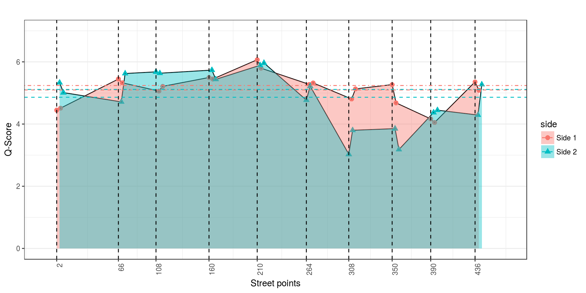
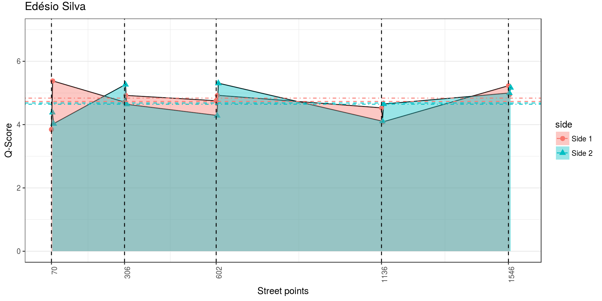
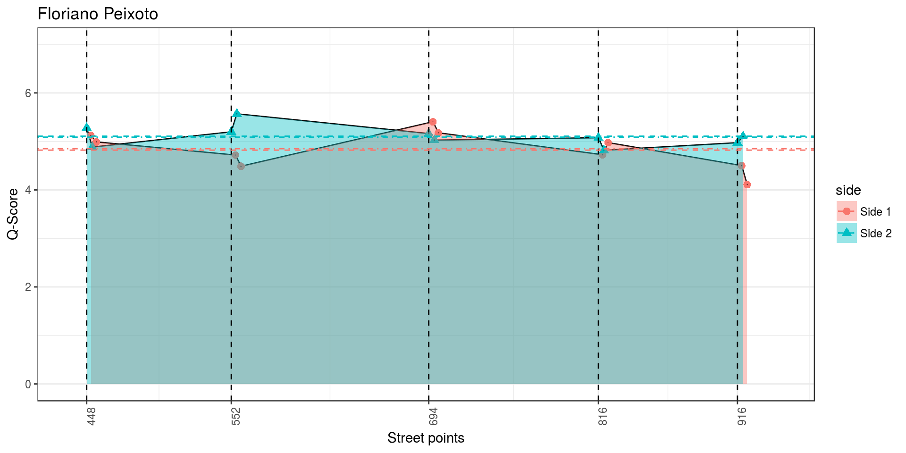

analisaPorRua2
Aqui apresenta-se uma análise mais detalhada, rua a rua, a partir das percepções capturadas.
Alguns pontos importantes:
- O número da rua indica o que? Metros? http://campinagrandepb.com.br/wp-content/uploads/2014/10/codigo-de-obras-Lei-5410.131.pdf
- Índices de dispersão/quebra (entre números da rua, entre lados da rua, no mesmo lado, etc.)? Séries temporais?
- Anomalias? https://www.datascience.com/blog/python-anomaly-detection
- Derivadas, máximos e mínimos locais? Pacote features do R?
- Dados surpreendentes?
- Surprise Maps? https://medium.com/@uwdata/surprise-maps-showing-the-unexpected-e92b67398865
- Surprise na rua? Tendo como base um modelo uniforme, um base rate (pela média e pela mediana dos pontos) e um modelo normal extraído (média e desvio) de todos os pontos da rua.
- Como temos o sorteio de valores pelo modelo normal, foram feitas 500 iterações para cálculo da média e da mediana. Os gráficos abaixo apresentam a média das médias/medianas nos surprise maps.
TO DO:
- Avaliar o mínimo de respostas necessárias?
- O que um especialista diria de útil na análise
- Comparação de modelo treinado x pessoas respondendo? Vantagens e desvantagens?
De acordo com a heterogeneidade de cada rua (abaixo) vamos apresentar a discussão, a partir da próxima seção, da mais heterogênea para a mais homogênea.
## [1] ">>>>>> Especi 3 classes [ 0.444484826835534 , 0.597181839831132 ] 0.520833333333333"## [1] ">>>>>> Especi 2classes [ 0.690542380357667 , 0.776124286308999 ] 0.733333333333333"## [1] ">>>>>> Especi x surp 3classes [ 0.338140979134151 , 0.470192354199182 ] 0.404166666666667"## [1] ">>>>>> Especi x surp 2classes [ 0.594650520022937 , 0.65951614664373 ] 0.627083333333333"## labels variable value
## 1 Gini cristina 0.07866857
## 2 Gini inacio 0.06449985
## 3 Gini edesio 0.05505192
## 4 Gini floriano 0.03625431
## 5 Gini maciel 0.02877131
## 6 Gini manoel 0.02787024## labels variable value
## 1 Entropy cristina 0.011272603
## 2 Entropy inacio 0.006778966
## 3 Entropy edesio 0.004741204
## 4 Entropy floriano 0.002272689
## 5 Entropy manoel 0.001275784
## 6 Entropy maciel 0.001268588## labels variable value
## 1 SD cristina 0.7246290
## 2 SD inacio 0.5468982
## 3 SD edesio 0.4657048
## 4 SD floriano 0.3386793
## 5 SD maciel 0.2462220
## 6 SD manoel 0.1922078O que procurar?
- Ponto mais heterogeneo/homogeneo
- Melhor e pior local da rua
- Melhor e pior área da rua (considerando os dois lados)
- Áreas muito diferentes entre lados
- Descontinuidades no mesmo lado
- Heterogeneidade/Homogeneidade no ponto -> Isso tudo pode ser explicado pela regressão geral das features?
- O que é a rua?
Retestes
## Krippendorff's alpha
##
## Subjects = 45
## Raters = 2
## alpha = 1## Call: cohen.kappa1(x = x, w = w, n.obs = n.obs, alpha = alpha, levels = levels)
##
## Cohen Kappa and Weighted Kappa correlation coefficients and confidence boundaries
## lower estimate upper
## unweighted kappa 1 1 1
## weighted kappa 1 1 1
##
## Number of subjects = 45## Krippendorff's alpha
##
## Subjects = 87
## Raters = 2
## alpha = 0.566## Call: cohen.kappa1(x = x, w = w, n.obs = n.obs, alpha = alpha, levels = levels)
##
## Cohen Kappa and Weighted Kappa correlation coefficients and confidence boundaries
## lower estimate upper
## unweighted kappa 0.43 0.57 0.71
## weighted kappa -0.79 0.58 1.00
##
## Number of subjects = 87## Confusion Matrix and Statistics
##
## Reference
## Prediction 0 1 -1 305-135 66 66-225
## 0 3 2 0 0 0 0
## 1 1 37 4 0 0 0
## -1 9 7 21 0 0 0
## 305-135 0 0 0 1 0 0
## 66 0 0 0 0 1 0
## 66-225 0 0 0 0 0 1
##
## Overall Statistics
##
## Accuracy : 0.7356
## 95% CI : (0.6302, 0.8245)
## No Information Rate : 0.5287
## P-Value [Acc > NIR] : 6.172e-05
##
## Kappa : 0.5691
## Mcnemar's Test P-Value : NA
##
## Statistics by Class:
##
## Class: 0 Class: 1 Class: -1 Class: 305-135 Class: 66
## Sensitivity 0.23077 0.8043 0.8400 1.00000 1.00000
## Specificity 0.97297 0.8780 0.7419 1.00000 1.00000
## Pos Pred Value 0.60000 0.8810 0.5676 1.00000 1.00000
## Neg Pred Value 0.87805 0.8000 0.9200 1.00000 1.00000
## Prevalence 0.14943 0.5287 0.2874 0.01149 0.01149
## Detection Rate 0.03448 0.4253 0.2414 0.01149 0.01149
## Detection Prevalence 0.05747 0.4828 0.4253 0.01149 0.01149
## Balanced Accuracy 0.60187 0.8412 0.7910 1.00000 1.00000
## Class: 66-225
## Sensitivity 1.00000
## Specificity 1.00000
## Pos Pred Value 1.00000
## Neg Pred Value 1.00000
## Prevalence 0.01149
## Detection Rate 0.01149
## Detection Prevalence 0.01149
## Balanced Accuracy 1.00000## Confusion Matrix and Statistics
##
## Reference
## Prediction 0 1 -1 305-135 66 66-225
## 0 0 0 0 0 0 0
## 1 0 37 5 0 0 0
## -1 0 9 33 0 0 0
## 305-135 0 0 0 1 0 0
## 66 0 0 0 0 1 0
## 66-225 0 0 0 0 0 1
##
## Overall Statistics
##
## Accuracy : 0.8391
## 95% CI : (0.7448, 0.9091)
## No Information Rate : 0.5287
## P-Value [Acc > NIR] : 1.139e-09
##
## Kappa : 0.6984
## Mcnemar's Test P-Value : NA
##
## Statistics by Class:
##
## Class: 0 Class: 1 Class: -1 Class: 305-135 Class: 66
## Sensitivity NA 0.8043 0.8684 1.00000 1.00000
## Specificity 1 0.8780 0.8163 1.00000 1.00000
## Pos Pred Value NA 0.8810 0.7857 1.00000 1.00000
## Neg Pred Value NA 0.8000 0.8889 1.00000 1.00000
## Prevalence 0 0.5287 0.4368 0.01149 0.01149
## Detection Rate 0 0.4253 0.3793 0.01149 0.01149
## Detection Prevalence 0 0.4828 0.4828 0.01149 0.01149
## Balanced Accuracy NA 0.8412 0.8424 1.00000 1.00000
## Class: 66-225
## Sensitivity 1.00000
## Specificity 1.00000
## Pos Pred Value 1.00000
## Neg Pred Value 1.00000
## Prevalence 0.01149
## Detection Rate 0.01149
## Detection Prevalence 0.01149
## Balanced Accuracy 1.00000## Confusion Matrix and Statistics
##
## Reference
## Prediction 0 1 -1 305-135 66 66-225
## 0 0 0 0 0 0 0
## 1 0 43 4 0 0 0
## -1 0 16 21 0 0 0
## 305-135 0 0 0 1 0 0
## 66 0 0 0 0 1 0
## 66-225 0 0 0 0 0 1
##
## Overall Statistics
##
## Accuracy : 0.7701
## 95% CI : (0.6675, 0.8536)
## No Information Rate : 0.6782
## P-Value [Acc > NIR] : 0.03972
##
## Kappa : 0.5502
## Mcnemar's Test P-Value : NA
##
## Statistics by Class:
##
## Class: 0 Class: 1 Class: -1 Class: 305-135 Class: 66
## Sensitivity NA 0.7288 0.8400 1.00000 1.00000
## Specificity 1 0.8571 0.7419 1.00000 1.00000
## Pos Pred Value NA 0.9149 0.5676 1.00000 1.00000
## Neg Pred Value NA 0.6000 0.9200 1.00000 1.00000
## Prevalence 0 0.6782 0.2874 0.01149 0.01149
## Detection Rate 0 0.4943 0.2414 0.01149 0.01149
## Detection Prevalence 0 0.5402 0.4253 0.01149 0.01149
## Balanced Accuracy NA 0.7930 0.7910 1.00000 1.00000
## Class: 66-225
## Sensitivity 1.00000
## Specificity 1.00000
## Pos Pred Value 1.00000
## Neg Pred Value 1.00000
## Prevalence 0.01149
## Detection Rate 0.01149
## Detection Prevalence 0.01149
## Balanced Accuracy 1.00000## Krippendorff's alpha
##
## Subjects = 85
## Raters = 2
## alpha = 1## Call: cohen.kappa1(x = x, w = w, n.obs = n.obs, alpha = alpha, levels = levels)
##
## Cohen Kappa and Weighted Kappa correlation coefficients and confidence boundaries
## lower estimate upper
## unweighted kappa 1 1 1
## weighted kappa 1 1 1
##
## Number of subjects = 85## Krippendorff's alpha
##
## Subjects = 47
## Raters = 2
## alpha = 0.505## Call: cohen.kappa1(x = x, w = w, n.obs = n.obs, alpha = alpha, levels = levels)
##
## Cohen Kappa and Weighted Kappa correlation coefficients and confidence boundaries
## lower estimate upper
## unweighted kappa 0.31 0.51 0.71
## weighted kappa 0.70 0.70 0.70
##
## Number of subjects = 47## Confusion Matrix and Statistics
##
## Reference
## Prediction 0 1 -1 130 130-180
## 0 9 6 1 0 0
## 1 1 17 1 0 0
## -1 1 5 4 0 0
## 130 0 0 0 1 0
## 130-180 0 0 0 0 1
##
## Overall Statistics
##
## Accuracy : 0.6809
## 95% CI : (0.5288, 0.8091)
## No Information Rate : 0.5957
## P-Value [Acc > NIR] : 0.1489
##
## Kappa : 0.5101
## Mcnemar's Test P-Value : NA
##
## Statistics by Class:
##
## Class: 0 Class: 1 Class: -1 Class: 130 Class: 130-180
## Sensitivity 0.8182 0.6071 0.66667 1.00000 1.00000
## Specificity 0.8056 0.8947 0.85366 1.00000 1.00000
## Pos Pred Value 0.5625 0.8947 0.40000 1.00000 1.00000
## Neg Pred Value 0.9355 0.6071 0.94595 1.00000 1.00000
## Prevalence 0.2340 0.5957 0.12766 0.02128 0.02128
## Detection Rate 0.1915 0.3617 0.08511 0.02128 0.02128
## Detection Prevalence 0.3404 0.4043 0.21277 0.02128 0.02128
## Balanced Accuracy 0.8119 0.7509 0.76016 1.00000 1.00000## Confusion Matrix and Statistics
##
## Reference
## Prediction 0 1 -1 130 130-180
## 0 0 0 0 0 0
## 1 0 17 2 0 0
## -1 0 11 15 0 0
## 130 0 0 0 1 0
## 130-180 0 0 0 0 1
##
## Overall Statistics
##
## Accuracy : 0.7234
## 95% CI : (0.5736, 0.8438)
## No Information Rate : 0.5957
## P-Value [Acc > NIR] : 0.04876
##
## Kappa : 0.5045
## Mcnemar's Test P-Value : NA
##
## Statistics by Class:
##
## Class: 0 Class: 1 Class: -1 Class: 130 Class: 130-180
## Sensitivity NA 0.6071 0.8824 1.00000 1.00000
## Specificity 1 0.8947 0.6333 1.00000 1.00000
## Pos Pred Value NA 0.8947 0.5769 1.00000 1.00000
## Neg Pred Value NA 0.6071 0.9048 1.00000 1.00000
## Prevalence 0 0.5957 0.3617 0.02128 0.02128
## Detection Rate 0 0.3617 0.3191 0.02128 0.02128
## Detection Prevalence 0 0.4043 0.5532 0.02128 0.02128
## Balanced Accuracy NA 0.7509 0.7578 1.00000 1.00000## Confusion Matrix and Statistics
##
## Reference
## Prediction 0 1 -1 130 130-180
## 0 0 0 0 0 0
## 1 0 33 2 0 0
## -1 0 6 4 0 0
## 130 0 0 0 1 0
## 130-180 0 0 0 0 1
##
## Overall Statistics
##
## Accuracy : 0.8298
## 95% CI : (0.6919, 0.9235)
## No Information Rate : 0.8298
## P-Value [Acc > NIR] : 0.593
##
## Kappa : 0.5192
## Mcnemar's Test P-Value : NA
##
## Statistics by Class:
##
## Class: 0 Class: 1 Class: -1 Class: 130 Class: 130-180
## Sensitivity NA 0.8462 0.66667 1.00000 1.00000
## Specificity 1 0.7500 0.85366 1.00000 1.00000
## Pos Pred Value NA 0.9429 0.40000 1.00000 1.00000
## Neg Pred Value NA 0.5000 0.94595 1.00000 1.00000
## Prevalence 0 0.8298 0.12766 0.02128 0.02128
## Detection Rate 0 0.7021 0.08511 0.02128 0.02128
## Detection Prevalence 0 0.7447 0.21277 0.02128 0.02128
## Balanced Accuracy NA 0.7981 0.76016 1.00000 1.00000Cristina Procópio
##
## Shapiro-Wilk normality test
##
## data: cristina$qscore
## W = 0.93218, p-value = 0.01898## mean sd
## 4.97922172 0.71551385
## (0.11313267) (0.07999688)## [1] ">>> GINI da rua: "## [1] 0.07866857## num value
## 1 305 0.108934058
## 2 350 0.104491505
## 3 436 0.042226458
## 4 2 0.040741696
## 5 66 0.033816867
## 6 105 0.026381057
## 7 261 0.020810685
## 8 390 0.020457357
## 9 160 0.010672399
## 10 210 0.009388277## num value
## 1 2 NaN
## 2 66 NaN
## 3 105 NaN
## 4 160 NaN
## 5 210 NaN
## 6 261 NaN
## 7 305 NaN
## 8 350 NaN
## 9 390 NaN
## 10 436 NaN## num value
## 1 2 NaN
## 2 66 NaN
## 3 105 NaN
## 4 160 NaN
## 5 210 NaN
## 6 261 NaN
## 7 305 NaN
## 8 350 NaN
## 9 390 NaN
## 10 436 NaN## [1] ">>>> Matriz confusao 3 niveis: 1,0,-1"## [1] ">>>> Aida x Mariana"## Confusion Matrix and Statistics
##
## Reference
## Prediction -1 0 1
## -1 17 0 0
## 0 5 3 2
## 1 6 0 7
##
## Overall Statistics
##
## Accuracy : 0.675
## 95% CI : (0.5087, 0.8143)
## No Information Rate : 0.7
## P-Value [Acc > NIR] : 0.703249
##
## Kappa : 0.4678
## Mcnemar's Test P-Value : 0.004637
##
## Statistics by Class:
##
## Class: -1 Class: 0 Class: 1
## Sensitivity 0.6071 1.0000 0.7778
## Specificity 1.0000 0.8108 0.8065
## Pos Pred Value 1.0000 0.3000 0.5385
## Neg Pred Value 0.5217 1.0000 0.9259
## Prevalence 0.7000 0.0750 0.2250
## Detection Rate 0.4250 0.0750 0.1750
## Detection Prevalence 0.4250 0.2500 0.3250
## Balanced Accuracy 0.8036 0.9054 0.7921## [1] ">>>> Aida x Surprise"## Confusion Matrix and Statistics
##
## Reference
## Prediction -1 0 1
## -1 9 1 3
## 0 1 2 2
## 1 7 7 8
##
## Overall Statistics
##
## Accuracy : 0.475
## 95% CI : (0.3151, 0.6387)
## No Information Rate : 0.425
## P-Value [Acc > NIR] : 0.3138
##
## Kappa : 0.1946
## Mcnemar's Test P-Value : 0.2235
##
## Statistics by Class:
##
## Class: -1 Class: 0 Class: 1
## Sensitivity 0.5294 0.2000 0.6154
## Specificity 0.8261 0.9000 0.4815
## Pos Pred Value 0.6923 0.4000 0.3636
## Neg Pred Value 0.7037 0.7714 0.7222
## Prevalence 0.4250 0.2500 0.3250
## Detection Rate 0.2250 0.0500 0.2000
## Detection Prevalence 0.3250 0.1250 0.5500
## Balanced Accuracy 0.6777 0.5500 0.5484## [1] ">>>> Mariana x Surprise"## Confusion Matrix and Statistics
##
## Reference
## Prediction -1 0 1
## -1 11 0 2
## 0 4 1 0
## 1 13 2 7
##
## Overall Statistics
##
## Accuracy : 0.475
## 95% CI : (0.3151, 0.6387)
## No Information Rate : 0.7
## P-Value [Acc > NIR] : 0.999146
##
## Kappa : 0.1789
## Mcnemar's Test P-Value : 0.002816
##
## Statistics by Class:
##
## Class: -1 Class: 0 Class: 1
## Sensitivity 0.3929 0.3333 0.7778
## Specificity 0.8333 0.8919 0.5161
## Pos Pred Value 0.8462 0.2000 0.3182
## Neg Pred Value 0.3704 0.9429 0.8889
## Prevalence 0.7000 0.0750 0.2250
## Detection Rate 0.2750 0.0250 0.1750
## Detection Prevalence 0.3250 0.1250 0.5500
## Balanced Accuracy 0.6131 0.6126 0.6470## V1 V2.x V2.y
## 1 160-135 1 -1
## 2 2-135 1 -1
## 3 2-225 1 -1
## 4 350-45 1 -1
## 5 390-135 1 -1
## 6 436-22 1 -1## [1] ">>>> Matriz confusao 2 niveis: 1, (0,-1)"## [1] ">>>> Aida x Mariana"## Confusion Matrix and Statistics
##
## Reference
## Prediction -1 1
## -1 25 2
## 1 6 7
##
## Accuracy : 0.8
## 95% CI : (0.6435, 0.9095)
## No Information Rate : 0.775
## P-Value [Acc > NIR] : 0.4385
##
## Kappa : 0.5046
## Mcnemar's Test P-Value : 0.2888
##
## Sensitivity : 0.8065
## Specificity : 0.7778
## Pos Pred Value : 0.9259
## Neg Pred Value : 0.5385
## Prevalence : 0.7750
## Detection Rate : 0.6250
## Detection Prevalence : 0.6750
## Balanced Accuracy : 0.7921
##
## 'Positive' Class : -1
## ## [1] ">>>> Aida x Surprise"## Confusion Matrix and Statistics
##
## Reference
## Prediction -1 1
## -1 13 5
## 1 14 8
##
## Accuracy : 0.525
## 95% CI : (0.3613, 0.6849)
## No Information Rate : 0.675
## P-Value [Acc > NIR] : 0.98387
##
## Kappa : 0.0821
## Mcnemar's Test P-Value : 0.06646
##
## Sensitivity : 0.4815
## Specificity : 0.6154
## Pos Pred Value : 0.7222
## Neg Pred Value : 0.3636
## Prevalence : 0.6750
## Detection Rate : 0.3250
## Detection Prevalence : 0.4500
## Balanced Accuracy : 0.5484
##
## 'Positive' Class : -1
## ## [1] ">>>> Mariana x Surprise"## Confusion Matrix and Statistics
##
## Reference
## Prediction -1 1
## -1 16 2
## 1 15 7
##
## Accuracy : 0.575
## 95% CI : (0.4089, 0.7296)
## No Information Rate : 0.775
## P-Value [Acc > NIR] : 0.998659
##
## Kappa : 0.1943
## Mcnemar's Test P-Value : 0.003609
##
## Sensitivity : 0.5161
## Specificity : 0.7778
## Pos Pred Value : 0.8889
## Neg Pred Value : 0.3182
## Prevalence : 0.7750
## Detection Rate : 0.4000
## Detection Prevalence : 0.4500
## Balanced Accuracy : 0.6470
##
## 'Positive' Class : -1
## ## [1] ">>>> Matriz confusao 2 niveis: (1, 0),-1"## [1] ">>>> Aida x Mariana"## Confusion Matrix and Statistics
##
## Reference
## Prediction -1 1
## -1 17 0
## 1 11 12
##
## Accuracy : 0.725
## 95% CI : (0.5611, 0.854)
## No Information Rate : 0.7
## P-Value [Acc > NIR] : 0.440607
##
## Kappa : 0.4811
## Mcnemar's Test P-Value : 0.002569
##
## Sensitivity : 0.6071
## Specificity : 1.0000
## Pos Pred Value : 1.0000
## Neg Pred Value : 0.5217
## Prevalence : 0.7000
## Detection Rate : 0.4250
## Detection Prevalence : 0.4250
## Balanced Accuracy : 0.8036
##
## 'Positive' Class : -1
## ## [1] ">>>> Aida x Surprise"## Confusion Matrix and Statistics
##
## Reference
## Prediction -1 1
## -1 9 4
## 1 8 19
##
## Accuracy : 0.7
## 95% CI : (0.5347, 0.8344)
## No Information Rate : 0.575
## P-Value [Acc > NIR] : 0.07329
##
## Kappa : 0.3668
## Mcnemar's Test P-Value : 0.38648
##
## Sensitivity : 0.5294
## Specificity : 0.8261
## Pos Pred Value : 0.6923
## Neg Pred Value : 0.7037
## Prevalence : 0.4250
## Detection Rate : 0.2250
## Detection Prevalence : 0.3250
## Balanced Accuracy : 0.6777
##
## 'Positive' Class : -1
## ## [1] ">>>> Mariana x Surprise"## Confusion Matrix and Statistics
##
## Reference
## Prediction -1 1
## -1 11 2
## 1 17 10
##
## Accuracy : 0.525
## 95% CI : (0.3613, 0.6849)
## No Information Rate : 0.7
## P-Value [Acc > NIR] : 0.993745
##
## Kappa : 0.1667
## Mcnemar's Test P-Value : 0.001319
##
## Sensitivity : 0.3929
## Specificity : 0.8333
## Pos Pred Value : 0.8462
## Neg Pred Value : 0.3704
## Prevalence : 0.7000
## Detection Rate : 0.2750
## Detection Prevalence : 0.3250
## Balanced Accuracy : 0.6131
##
## 'Positive' Class : -1
## ## Adding missing grouping variables: `num`## We recommend that you use the dev version of ggplot2 with `ggplotly()`
## Install it with: `devtools::install_github('hadley/ggplot2')`
## We recommend that you use the dev version of ggplot2 with `ggplotly()`
## Install it with: `devtools::install_github('hadley/ggplot2')`
| xlabel | side | num | angle | V3 | street |
|---|---|---|---|---|---|
| 2 - p1 | Side 1 | 2 | 45 | 4.447699 | R._Cristina_Procópio_Silva |
| 2 - p2 | Side 1 | 6 | 293 | 4.510225 | R._Cristina_Procópio_Silva |
| 66 - p1 | Side 1 | 66 | 45 | 5.446045 | R._Cristina_Procópio_Silva |
| 66 - p2 | Side 1 | 70 | 315 | 5.325381 | R._Cristina_Procópio_Silva |
| 105 - p1 | Side 1 | 108 | 45 | 5.059479 | R._Cristina_Procópio_Silva |
| 105 - p2 | Side 1 | 112 | 315 | 5.211368 | R._Cristina_Procópio_Silva |
| 160 - p1 | Side 1 | 160 | 45 | 5.495945 | R._Cristina_Procópio_Silva |
| 160 - p2 | Side 1 | 164 | 315 | 5.447693 | R._Cristina_Procópio_Silva |
| 210 - p1 | Side 1 | 210 | 45 | 6.067538 | R._Cristina_Procópio_Silva |
| 210 - p2 | Side 1 | 214 | 315 | 5.795419 | R._Cristina_Procópio_Silva |
| 261 - p1 | Side 1 | 264 | 22 | 5.274496 | R._Cristina_Procópio_Silva |
| 261 - p2 | Side 1 | 268 | 315 | 5.321279 | R._Cristina_Procópio_Silva |
| 305 - p1 | Side 1 | 308 | 45 | 4.804775 | R._Cristina_Procópio_Silva |
| 305 - p2 | Side 1 | 312 | 293 | 5.129242 | R._Cristina_Procópio_Silva |
| 350 - p1 | Side 1 | 350 | 45 | 5.267653 | R._Cristina_Procópio_Silva |
| 350 - p2 | Side 1 | 354 | 315 | 4.680847 | R._Cristina_Procópio_Silva |
| 390 - p1 | Side 1 | 390 | 45 | 4.164578 | R._Cristina_Procópio_Silva |
| 390 - p2 | Side 1 | 394 | 315 | 4.048885 | R._Cristina_Procópio_Silva |
| 436 - p1 | Side 1 | 436 | 135 | 5.353962 | R._Cristina_Procópio_Silva |
| 436 - p2 | Side 1 | 440 | 22 | 5.086228 | R._Cristina_Procópio_Silva |
| 2 - p1 | Side 2 | 5 | 135 | 5.329453 | R._Cristina_Procópio_Silva |
| 2 - p2 | Side 2 | 9 | 225 | 5.009752 | R._Cristina_Procópio_Silva |
| 66 - p1 | Side 2 | 69 | 135 | 4.712068 | R._Cristina_Procópio_Silva |
| 66 - p2 | Side 2 | 73 | 225 | 5.623545 | R._Cristina_Procópio_Silva |
| 105 - p1 | Side 2 | 105 | 135 | 5.677785 | R._Cristina_Procópio_Silva |
| 105 - p2 | Side 2 | 109 | 225 | 5.633933 | R._Cristina_Procópio_Silva |
| 160 - p1 | Side 2 | 163 | 135 | 5.734743 | R._Cristina_Procópio_Silva |
| 160 - p2 | Side 2 | 167 | 225 | 5.436140 | R._Cristina_Procópio_Silva |
| 210 - p1 | Side 2 | 213 | 135 | 5.889755 | R._Cristina_Procópio_Silva |
| 210 - p2 | Side 2 | 217 | 225 | 5.964036 | R._Cristina_Procópio_Silva |
| 261 - p1 | Side 2 | 261 | 135 | 4.769459 | R._Cristina_Procópio_Silva |
| 261 - p2 | Side 2 | 265 | 225 | 5.216660 | R._Cristina_Procópio_Silva |
| 305 - p1 | Side 2 | 305 | 135 | 3.030011 | R._Cristina_Procópio_Silva |
| 305 - p2 | Side 2 | 309 | 225 | 3.798451 | R._Cristina_Procópio_Silva |
| 350 - p1 | Side 2 | 353 | 135 | 3.851755 | R._Cristina_Procópio_Silva |
| 350 - p2 | Side 2 | 357 | 203 | 3.178503 | R._Cristina_Procópio_Silva |
| 390 - p1 | Side 2 | 393 | 135 | 4.370024 | R._Cristina_Procópio_Silva |
| 390 - p2 | Side 2 | 397 | 203 | 4.444877 | R._Cristina_Procópio_Silva |
| 436 - p1 | Side 2 | 439 | 203 | 4.289207 | R._Cristina_Procópio_Silva |
| 436 - p2 | Side 2 | 443 | 315 | 5.269974 | R._Cristina_Procópio_Silva |
++++++ Median all 4.800488839125
++++++ Mean all 4.69247116607731
| street | mean | median | sd | gini | upper | lower |
|---|---|---|---|---|---|---|
| R._Manoel_Pereira_de_Araújo | 3.690971 | 3.644410 | 0.1922078 | 0.0278702 | 3.775210 | 3.606733 |
| R._Edésio_Silva | 4.707545 | 4.731812 | 0.4657048 | 0.0550519 | 4.911649 | 4.503441 |
| R._Inácio_Marquês_da_Silva | 4.720222 | 4.837480 | 0.5468982 | 0.0644999 | 4.959911 | 4.480533 |
| R._Maciel_Pinheiro | 4.777948 | 4.772454 | 0.2462220 | 0.0287713 | 4.885860 | 4.670037 |
| Av._Mal._Floriano_Peixoto | 4.964417 | 5.007471 | 0.3386793 | 0.0362543 | 5.112850 | 4.815985 |
| R._Cristina_Procópio_Silva | 4.979222 | 5.214014 | 0.7246290 | 0.0786686 | 5.296804 | 4.661639 |
worst
R._Cristina_Procópio_Silva_2_45-> 4.447699(-0.003739286)
best
R._Cristina_Procópio_Silva_2_135-> 5.329453(0.003167214)
best
R._Cristina_Procópio_Silva_2_225-> 5.009752(0.0002753021)
worst
R._Cristina_Procópio_Silva_2_293-> 4.510225(-0.003203081)
best
R._Cristina_Procópio_Silva_66_45-> 5.446045(0.00271577)
worst
R._Cristina_Procópio_Silva_66_135-> 4.712068(-0.002919979)
best
R._Cristina_Procópio_Silva_66_225-> 5.623546(0.004156779)
best
R._Cristina_Procópio_Silva_66_315-> 5.325381(0.001620766)
worst
R._Cristina_Procópio_Silva_105_45-> 5.059479(-9.331026e-05)
best
R._Cristina_Procópio_Silva_105_135-> 5.677785(0.004234397)
best
R._Cristina_Procópio_Silva_105_225-> 5.633933(0.003907445)
worst
R._Cristina_Procópio_Silva_105_315-> 5.211368(0.0008821051)
worst
R._Cristina_Procópio_Silva_160_45-> 5.495945(0.002503373)
best
R._Cristina_Procópio_Silva_160_135-> 5.734743(0.004292078)
worst
R._Cristina_Procópio_Silva_160_225-> 5.43614(0.00220989)
best
R._Cristina_Procópio_Silva_160_315-> 5.447693(0.002221076)
best
R._Cristina_Procópio_Silva_210_45-> 6.067538(0.005599171)
best
R._Cristina_Procópio_Silva_210_135-> 5.889755(0.004557983)
worst
R._Cristina_Procópio_Silva_210_225-> 5.964036(0.004881614)
worst
R._Cristina_Procópio_Silva_210_315-> 5.795419(0.004286471)
best
R._Cristina_Procópio_Silva_261_22-> 5.274496(0.001616823)
worst
R._Cristina_Procópio_Silva_261_135-> 4.769459(-0.001895722)
best
R._Cristina_Procópio_Silva_261_225-> 5.21666(0.001095924)
best
R._Cristina_Procópio_Silva_261_315-> 5.321279(0.001988367)
best
R._Cristina_Procópio_Silva_305_45-> 4.804776(0.0003978313)
worst
R._Cristina_Procópio_Silva_305_135-> 3.030011(-0.01213487)
worst
R._Cristina_Procópio_Silva_305_225-> 3.798451(-0.006629503)
best
R._Cristina_Procópio_Silva_305_293-> 5.129242(0.003605165)
best
R._Cristina_Procópio_Silva_350_45-> 5.267653(0.004492579)
worst
R._Cristina_Procópio_Silva_350_135-> 3.851755(-0.006413103)
worst
R._Cristina_Procópio_Silva_350_203-> 3.178503(-0.01119881)
worst
R._Cristina_Procópio_Silva_350_315-> 4.680847(-0.0009907502)
worst
R._Cristina_Procópio_Silva_390_45-> 4.164578(-0.004233991)
best
R._Cristina_Procópio_Silva_390_135-> 4.370024(-0.003085517)
best
R._Cristina_Procópio_Silva_390_203-> 4.444877(-0.002714472)
worst
R._Cristina_Procópio_Silva_390_315-> 4.048885(-0.005078636)
best
R._Cristina_Procópio_Silva_436_22-> 5.086228(0.0004936254)
best
R._Cristina_Procópio_Silva_436_135-> 5.353962(0.002814497)
worst
R._Cristina_Procópio_Silva_436_203-> 4.289207(-0.005341684)
best
R._Cristina_Procópio_Silva_436_315-> 5.269974(0.001996273)
- Locais problemáticos na rua (olhando as fotos):
- 2 side1 (terreno com lixo)
- 305 side2 (lixo, pouca manutenção)
- 436 side2 203 (construção/menor manutenção)
- Virtudes na rua (olhando as fotos):
- 2 side2 (prédios bem mantidos, verde)
- 66 inteiro (prédios bem mantidos, verde)
- 261 inteiro (verde, prédios bem mantidos)
- 436 menos o 203 (verde, casas bem mantidas)
Olhando os Q-Scores ao longo da rua
- Melhor e pior local da rua:
- 66-p2 side2 (melhor)
- 305-p1 side2 (pior) diferença de 2.5 -> boa manutenção, verde, ruas largas x falta de manutenção, lixo
- Melhor e pior lado da rua:
- O side1 parece ligeiramente melhor (2 side2, 66 empate, 261, 305, 436 side1)
- Melhor e pior área da rua (considerando os dois lados):
- 66 a 261 side1 (melhor)
- 305 a 436 side2 (pior) menor dif. de aprox. 2.1 -> verde, boa manutenção x lixo, menor manutenção, menos verde aparente (no 436 tem um ponto bacana que tem verde e boa manutenção, o outro nem tanto)
- Áreas muito diferentes entre lados:
- 305 a 436 menor diferenca de aprox. 1 -> boa manutenção, verde x lixo, pouca manutenção, menos verde aparente (no 436 tem um ponto bacana que tem verde e boa manutenção, o outro nem tanto)
- Descontinuidades no mesmo lado
- 66 side2 dif de 0.8 -> manutenção e verde aparente
- 305 side2 dif de 0.8 -> no meio da falta de manutenção, lixo a segunda imagem tem um prédio melhor conservado
- 305 side1 dif. de 0.45 -> mais prédios mais conservados
- 436 side2 dif. de 1.3 -> mais verde aparente, construção/manutenção
- Heterogeneidade/Homogeneidade no ponto:
- os pontos mais heterogêneros foram o 305 (lixo, falta de manutenção) e 436 (falta de manuteção, verde aparente).
- o mais homogêneo foi o 261 que é um ponto bem mantido e com verde
- Foram encontrados os problemas?
- Dois (305 e 436) dos três pontos foram encontrados. Tanto no número 305 como no 436, dentre os pontos avaliados, pôde-se perceber locais que necessitam de melhoria na rua.
- O ponto 2 seria encontrado se seguissemos a lista de heterogeneidade (2 mais homogeneo) ou se avaliassemos diferenças entre os dois lados por ponto (complicado em vários casos).
- Além disso, no ponto 66 sugere-se uma melhoria com um pouco mais de verde de modo a homogenizar ainda mais o ponto.
- O que é a rua?
- A nota média/mediana é boa ou ruim? De mediana para boa
- Existe muita variação? Variações de locais melhores e piores ao longo de toda a rua, alguns números com grande variação no local
- Existe um lado melhor? No final da rua side1 parece despertar maiores preferências que o outro lado. Média e mediana de side1 melhores
- Existe uma área melhor pior? Conforme questão 4 do número 66 ao 261 parece termos a melhor área da rua e do número 305 ao 436 a pior área.
Olhando o surprise maps (uniforme + base rate + normal)
- Máximo e Mínimo?
- 66 p2 side2
- 305 p1 side2 diferença de 2.5 -> boa manutenção, verde, ruas largas x falta de manutenção, lixo
- Mais diversidade?
- 305, 2 lados separados: verde, manutenção x lixo, muro acabado
- 436, 1 estranho: verde, manutenção x construção, menor manutenção, problema na pista, lixo
- 66, 1 estranho: verde, prédios bem mantidos x verde menos destacado, manutenção
- 261, pontos do mesmo lado separados, 135 pior: verde, boa manutenção x lixo, árvores pequenas, poste, muro cego
- 2, 2 lados separados, mas 45 mais próximo ao side2 e 293 pior: verde, prédios mantidos x terreno, lixo
- Menor diversidade?
- 2 e 261 como mais homogêneos, mas ainda com dispersão
- Diferenças/saltos no lado?
- 2, side1 separado
- 66, side2 -> recaem nos pontos acima
- 261, side1 e side2 separados
- 305, side1 melhor que side2 e cada side separados internamente
- 436, side2 mais separado que side1
- Avaliação Problemas (minha opinião)
- Pesquisador: 3 problemas (descritos acima)
- Recall = método / pesquisador = 3/3 = 1
- Precisão = reais / método = 4/5 = 0.8 (menos o 66 1 estranho)
- Avaliação Virtudes (minha opinião)
- Pesquisador: 4 virtudes (descritos acima)
- Recall = método / pesquisador = 4/4 = 1
- Precisão = reais / método = 4/5 = 0.75 (menos o 305 2 lados separdos)
- Descrição
- Média/mediana: 4.92/5.12 > 4.68/4.82 -> rua de mediana para boa
- Variação no surprise? Variações ao longo da rua, alternando locais legais e não tão legais
- Lado melhor? Side1 (8) x Side2 (5)
- Região melhor? não fica claro no surprise, mas nos scores pode-se falar do 66 ao 261
Edésio Silva
##
## Shapiro-Wilk normality test
##
## data: edesio$qscore
## W = 0.95075, p-value = 0.3786## mean sd
## 4.70754469 0.45391292
## (0.10149801) (0.07176993)## [1] ">>> GINI da rua: 0.0550519176655792"## num value
## 1 70 0.07018701
## 2 602 0.04196017
## 3 1136 0.03056403
## 4 306 0.02675849
## 5 1546 0.01223759## num value
## 1 70 NaN
## 2 306 NaN
## 3 602 NaN
## 4 1136 NaN
## 5 1546 NaN## num value
## 1 70 NaN
## 2 306 NaN
## 3 602 NaN
## 4 1136 NaN
## 5 1546 NaN## [1] ">>>> Matriz confusao 3 niveis: 1,0,-1"## [1] ">>>> Livia x Kainara"## Confusion Matrix and Statistics
##
## Reference
## Prediction -1 0 1
## -1 5 4 2
## 0 0 4 2
## 1 0 3 0
##
## Overall Statistics
##
## Accuracy : 0.45
## 95% CI : (0.2306, 0.6847)
## No Information Rate : 0.55
## P-Value [Acc > NIR] : 0.8692
##
## Kappa : 0.176
## Mcnemar's Test P-Value : 0.1023
##
## Statistics by Class:
##
## Class: -1 Class: 0 Class: 1
## Sensitivity 1.0000 0.3636 0.0000
## Specificity 0.6000 0.7778 0.8125
## Pos Pred Value 0.4545 0.6667 0.0000
## Neg Pred Value 1.0000 0.5000 0.7647
## Prevalence 0.2500 0.5500 0.2000
## Detection Rate 0.2500 0.2000 0.0000
## Detection Prevalence 0.5500 0.3000 0.1500
## Balanced Accuracy 0.8000 0.5707 0.4062## [1] ">>>> Livia x Surprise"## Confusion Matrix and Statistics
##
## Reference
## Prediction -1 0 1
## -1 6 1 1
## 0 2 1 0
## 1 3 4 2
##
## Overall Statistics
##
## Accuracy : 0.45
## 95% CI : (0.2306, 0.6847)
## No Information Rate : 0.55
## P-Value [Acc > NIR] : 0.8692
##
## Kappa : 0.176
## Mcnemar's Test P-Value : 0.1490
##
## Statistics by Class:
##
## Class: -1 Class: 0 Class: 1
## Sensitivity 0.5455 0.1667 0.6667
## Specificity 0.7778 0.8571 0.5882
## Pos Pred Value 0.7500 0.3333 0.2222
## Neg Pred Value 0.5833 0.7059 0.9091
## Prevalence 0.5500 0.3000 0.1500
## Detection Rate 0.3000 0.0500 0.1000
## Detection Prevalence 0.4000 0.1500 0.4500
## Balanced Accuracy 0.6616 0.5119 0.6275## [1] ">>>> kainara x Surprise"## Confusion Matrix and Statistics
##
## Reference
## Prediction -1 0 1
## -1 3 4 1
## 0 1 1 1
## 1 1 6 2
##
## Overall Statistics
##
## Accuracy : 0.3
## 95% CI : (0.1189, 0.5428)
## No Information Rate : 0.55
## P-Value [Acc > NIR] : 0.9936
##
## Kappa : 0.0378
## Mcnemar's Test P-Value : 0.1465
##
## Statistics by Class:
##
## Class: -1 Class: 0 Class: 1
## Sensitivity 0.6000 0.09091 0.5000
## Specificity 0.6667 0.77778 0.5625
## Pos Pred Value 0.3750 0.33333 0.2222
## Neg Pred Value 0.8333 0.41176 0.8182
## Prevalence 0.2500 0.55000 0.2000
## Detection Rate 0.1500 0.05000 0.1000
## Detection Prevalence 0.4000 0.15000 0.4500
## Balanced Accuracy 0.6333 0.43434 0.5312## [1] ">>>> Matriz confusao 2 niveis: 1, (0,-1)"## [1] ">>>> Livia x Kainara"## Confusion Matrix and Statistics
##
## Reference
## Prediction -1 1
## -1 13 3
## 1 4 0
##
## Accuracy : 0.65
## 95% CI : (0.4078, 0.8461)
## No Information Rate : 0.85
## P-Value [Acc > NIR] : 0.9941
##
## Kappa : -0.2069
## Mcnemar's Test P-Value : 1.0000
##
## Sensitivity : 0.7647
## Specificity : 0.0000
## Pos Pred Value : 0.8125
## Neg Pred Value : 0.0000
## Prevalence : 0.8500
## Detection Rate : 0.6500
## Detection Prevalence : 0.8000
## Balanced Accuracy : 0.3824
##
## 'Positive' Class : -1
## ## [1] ">>>> Livia x Surprise"## Confusion Matrix and Statistics
##
## Reference
## Prediction -1 1
## -1 10 1
## 1 7 2
##
## Accuracy : 0.6
## 95% CI : (0.3605, 0.8088)
## No Information Rate : 0.85
## P-Value [Acc > NIR] : 0.9987
##
## Kappa : 0.1398
## Mcnemar's Test P-Value : 0.0771
##
## Sensitivity : 0.5882
## Specificity : 0.6667
## Pos Pred Value : 0.9091
## Neg Pred Value : 0.2222
## Prevalence : 0.8500
## Detection Rate : 0.5000
## Detection Prevalence : 0.5500
## Balanced Accuracy : 0.6275
##
## 'Positive' Class : -1
## ## [1] ">>>> Kainara x Surprise"## Confusion Matrix and Statistics
##
## Reference
## Prediction -1 1
## -1 9 2
## 1 7 2
##
## Accuracy : 0.55
## 95% CI : (0.3153, 0.7694)
## No Information Rate : 0.8
## P-Value [Acc > NIR] : 0.9974
##
## Kappa : 0.0426
## Mcnemar's Test P-Value : 0.1824
##
## Sensitivity : 0.5625
## Specificity : 0.5000
## Pos Pred Value : 0.8182
## Neg Pred Value : 0.2222
## Prevalence : 0.8000
## Detection Rate : 0.4500
## Detection Prevalence : 0.5500
## Balanced Accuracy : 0.5312
##
## 'Positive' Class : -1
## ## [1] ">>>> Matriz confusao 2 niveis: (1, 0),-1"## [1] ">>>> Livia x Kainara"## Confusion Matrix and Statistics
##
## Reference
## Prediction -1 1
## -1 5 6
## 1 0 9
##
## Accuracy : 0.7
## 95% CI : (0.4572, 0.8811)
## No Information Rate : 0.75
## P-Value [Acc > NIR] : 0.78578
##
## Kappa : 0.4286
## Mcnemar's Test P-Value : 0.04123
##
## Sensitivity : 1.0000
## Specificity : 0.6000
## Pos Pred Value : 0.4545
## Neg Pred Value : 1.0000
## Prevalence : 0.2500
## Detection Rate : 0.2500
## Detection Prevalence : 0.5500
## Balanced Accuracy : 0.8000
##
## 'Positive' Class : -1
## ## [1] ">>>> Livia x Surprise"## Confusion Matrix and Statistics
##
## Reference
## Prediction -1 1
## -1 6 2
## 1 5 7
##
## Accuracy : 0.65
## 95% CI : (0.4078, 0.8461)
## No Information Rate : 0.55
## P-Value [Acc > NIR] : 0.2520
##
## Kappa : 0.3137
## Mcnemar's Test P-Value : 0.4497
##
## Sensitivity : 0.5455
## Specificity : 0.7778
## Pos Pred Value : 0.7500
## Neg Pred Value : 0.5833
## Prevalence : 0.5500
## Detection Rate : 0.3000
## Detection Prevalence : 0.4000
## Balanced Accuracy : 0.6616
##
## 'Positive' Class : -1
## ## [1] ">>>> Kainara x Surprise"## Confusion Matrix and Statistics
##
## Reference
## Prediction -1 1
## -1 3 5
## 1 2 10
##
## Accuracy : 0.65
## 95% CI : (0.4078, 0.8461)
## No Information Rate : 0.75
## P-Value [Acc > NIR] : 0.8982
##
## Kappa : 0.2222
## Mcnemar's Test P-Value : 0.4497
##
## Sensitivity : 0.6000
## Specificity : 0.6667
## Pos Pred Value : 0.3750
## Neg Pred Value : 0.8333
## Prevalence : 0.2500
## Detection Rate : 0.1500
## Detection Prevalence : 0.4000
## Balanced Accuracy : 0.6333
##
## 'Positive' Class : -1
## ## Adding missing grouping variables: `num`## We recommend that you use the dev version of ggplot2 with `ggplotly()`
## Install it with: `devtools::install_github('hadley/ggplot2')`
## We recommend that you use the dev version of ggplot2 with `ggplotly()`
## Install it with: `devtools::install_github('hadley/ggplot2')`
| xlabel | side | num | angle | V3 | street |
|---|---|---|---|---|---|
| 70 - p1 | Side 1 | 70 | 135 | 3.845692 | R._Edésio_Silva |
| 70 - p2 | Side 1 | 74 | 22 | 5.379021 | R._Edésio_Silva |
| 306 - p1 | Side 1 | 306 | 135 | 4.711638 | R._Edésio_Silva |
| 306 - p2 | Side 1 | 310 | 22 | 4.921245 | R._Edésio_Silva |
| 602 - p1 | Side 1 | 602 | 135 | 4.751985 | R._Edésio_Silva |
| 602 - p2 | Side 1 | 606 | 22 | 4.924358 | R._Edésio_Silva |
| 1136 - p1 | Side 1 | 1136 | 135 | 4.527460 | R._Edésio_Silva |
| 1136 - p2 | Side 1 | 1140 | 22 | 4.082683 | R._Edésio_Silva |
| 1546 - p1 | Side 1 | 1546 | 135 | 5.227297 | R._Edésio_Silva |
| 1546 - p2 | Side 1 | 1550 | 22 | 4.951441 | R._Edésio_Silva |
| 70 - p1 | Side 2 | 73 | 203 | 4.379906 | R._Edésio_Silva |
| 70 - p2 | Side 2 | 77 | 315 | 4.029225 | R._Edésio_Silva |
| 306 - p1 | Side 2 | 309 | 203 | 5.266008 | R._Edésio_Silva |
| 306 - p2 | Side 2 | 313 | 315 | 4.638811 | R._Edésio_Silva |
| 602 - p1 | Side 2 | 605 | 203 | 4.287362 | R._Edésio_Silva |
| 602 - p2 | Side 2 | 609 | 315 | 5.308102 | R._Edésio_Silva |
| 1136 - p1 | Side 2 | 1139 | 203 | 4.106098 | R._Edésio_Silva |
| 1136 - p2 | Side 2 | 1143 | 315 | 4.649937 | R._Edésio_Silva |
| 1546 - p1 | Side 2 | 1549 | 203 | 4.997240 | R._Edésio_Silva |
| 1546 - p2 | Side 2 | 1553 | 315 | 5.165386 | R._Edésio_Silva |
++++++ Median all 4.800488839125
++++++ Mean all 4.69247116607731
| street | mean | median | sd | gini | upper | lower |
|---|---|---|---|---|---|---|
| R._Manoel_Pereira_de_Araújo | 3.690971 | 3.644410 | 0.1922078 | 0.0278702 | 3.775210 | 3.606733 |
| R._Edésio_Silva | 4.707545 | 4.731812 | 0.4657048 | 0.0550519 | 4.911649 | 4.503441 |
| R._Inácio_Marquês_da_Silva | 4.720222 | 4.837480 | 0.5468982 | 0.0644999 | 4.959911 | 4.480533 |
| R._Maciel_Pinheiro | 4.777948 | 4.772454 | 0.2462220 | 0.0287713 | 4.885860 | 4.670037 |
| Av._Mal._Floriano_Peixoto | 4.964417 | 5.007471 | 0.3386793 | 0.0362543 | 5.112850 | 4.815985 |
| R._Cristina_Procópio_Silva | 4.979222 | 5.214014 | 0.7246290 | 0.0786686 | 5.296804 | 4.661639 |
best
R._Edésio_Silva_70_22-> 5.37902(0.01192139)
worst
R._Edésio_Silva_70_135-> 3.845692(-0.01168073)
worst
R._Edésio_Silva_70_203-> 4.379906(-0.003493503)
worst
R._Edésio_Silva_70_315-> 4.029225(-0.008989896)
worst
R._Edésio_Silva_306_22-> 4.921245(0.002105801)
worst
R._Edésio_Silva_306_135-> 4.711638(-0.000399668)
best
R._Edésio_Silva_306_203-> 5.266008(0.007827416)
worst
R._Edésio_Silva_306_315-> 4.638811(-0.001704132)
best
R._Edésio_Silva_602_22-> 4.924358(0.002675702)
best
R._Edésio_Silva_602_135-> 4.751985(0.0002538437)
worst
R._Edésio_Silva_602_203-> 4.287362(-0.007426966)
best
R._Edésio_Silva_602_315-> 5.308102(0.008788506)
worst
R._Edésio_Silva_1136_22-> 4.082683(-0.007873485)
best
R._Edésio_Silva_1136_135-> 4.52746(-0.001554269)
worst
R._Edésio_Silva_1136_203-> 4.106098(-0.007505003)
best
R._Edésio_Silva_1136_315-> 4.649937(0.0005679076)
worst
R._Edésio_Silva_1546_22-> 4.951441(0.002294712)
best
R._Edésio_Silva_1546_135-> 5.227297(0.006207744)
worst
R._Edésio_Silva_1546_203-> 4.99724(0.002922527)
best
R._Edésio_Silva_1546_315-> 5.165386(0.005262427)
- Locais problemáticos na rua (olhando as fotos):
- 70 side1 135 (construção, menor manutenção, lixo) e side2 315 (menor manutenção), 203 (um pouco de lixo e menor manutenção);
- 602 side 203 (terreno com muito lixo);
- 1136 todos os lados (pouca manutenção, lixo, terrenos);
- Virtudes na rua (olhando as fotos):
- 70 22 (verde, casas bem mantidas)
- 306 menos o 315 (verde, casas bem mantidas)
- 602 22 e 315 (verde, casas bem mantidas)
- 1546 todo (casas bem mantidas, verde)
Olhando os Q-Scores ao longo da rua
- Melhor e pior local da rua:
- 602 p2 side2
- 70 p1 side1. Dif de 1.6 -> boa manutenção, algum verde x construção, pouca manutenção, sem verde
- Melhor e pior lado da rua:
- Não fica claro
- Melhor e pior área da rua (considerando os dois lados):
- confuso, não dá pra discernir facilmente
- Áreas muito diferentes entre lados:
- 70 a 306 melhora em side2 e piora em side1
- No side1 temos um ponto muito bom (70, 22) que foge do padrão de melhoria que sairia de pouca manutenção e falta de áŕvore para melhor manutenção e mais árvores.
- No side2 temos uma certa melhoria de manutenção + árvores aparentes
- 70 a 306 melhora em side2 e piora em side1
- Descontinuidades no mesmo lado
- 70 no side1, diferença de 1.55 -> construção, falta de verde x melhor manutenção, verde
- 602 no side1, diferença de 0.6 -> falta de manutenção, menos verde aparente x melhor manutenção, verde
- 602 no side2, diferença de 1.15 -> manutenção, verde x lixão
- 1136 no side2, diferença de 0.6 -> lixão
- Heterogeneidade/Homogeneidade no ponto:
- os pontos mais heterogêneos foram o 70 (construção, menor manutenção x melhor manutenção e algum verde) e 602 (menor manutenção, lixão x melhor manutenção, verde)
- o ponto mais homogêneo foi o 1546, é bem mantido e com alguma vegetação.
- Foram encontrados os problemas?
- O número 1136 no side1 não foi apontado dentre os 5 problemas levantados.
- O 1136 seria encontrado (diferença de 0.45) se continuássemos olhando as descontinuidades no mesmo lado da rua ou as piores notas (2 pior nota)
- O que é a rua?
- A nota média/mediana é boa ou ruim? De mediana para boa
- Existe muita variação? Variações de locais melhores e piores ao longo de toda a rua, alguns números com grande variação no local
- Existe um lado melhor? Não
- Existe uma área melhor pior? Não
Olhando o surprise maps (uniforme + base rate + normal)
- Máximo e Mínimo?
- 70 p2 side1
- 70 p1 side1. Dif de 1.6 -> boa manutenção, algum verde x construção, pouca manutenção, sem verde
- Mais diversidade?
- 70, 22 estranho: casa bem mantida, verde x construção, casas mal mantidas, casas mais simples, carro
- 602, um ponto de cada side separado: casas bem mantidas, verde x terreno, muro mal mantido
- 1136, um ponto de cada side separado: casa melhor mantida, verde x terreno, casas muito mal mantidas
- 306, 203 estranho positivamente: casas bem mantidas, árvores
- Menor diversidade?
- 1546, mais homogêneo e positivo
- Diferenças/saltos no lado?
- 70, side1 mais separado que side2
- 306, side2 mais separado que side1
- 602, um ponto de cada side separado
- 1136, um ponto de cada side separado
- Avaliação Problemas
- Pesquisador: 3 problemas (descritos acima)
- Recall = método / pesquisador = 2.5/3 = 0.833 (dois de 4 problemas faltando no 1136)
- Precisão = reais / método = 3/5 = 0.6 (1546 tem problema? 306 nao foi percebido) 6 Avaliação Virtudes
- Pesquisador: 4 virtudes (descritos acima)
- Recall = método / pesquisador = 3.75/4 = 0.93 (1 ponto do 1546 ficou como estranho negativo)
- Precisão = reais / método = 4/5 = 0.75 (menos o 1136)
- Descrição
- Média/mediana: 4.77/4.82 > 4.68/4.82 -> rua de mediana para boa
- Variação no surprise? Variações ao longo da rua, alternando locais legais e não tão legais
- Lado melhor? Não fica tão claro, Side1 (5) x Side2 (6)
- Região melhor? não fica claro nem no surprise e nem nos scores
Inácio Marques
##
## Shapiro-Wilk normality test
##
## data: inacio$qscore
## W = 0.95899, p-value = 0.1547## mean sd
## 4.72022221 0.54001869
## (0.08538445) (0.06037593)## [1] ">>> GINI da rua: 0.0644998537905099"## num value
## 1 2 0.061255952
## 2 120 0.058486494
## 3 54 0.057723146
## 4 434 0.055982386
## 5 199 0.032779289
## 6 360 0.025168857
## 7 500 0.016166971
## 8 300 0.013848590
## 9 239 0.011965912
## 10 160 0.009728884## num value
## 1 2 NaN
## 2 54 NaN
## 3 120 NaN
## 4 160 NaN
## 5 199 NaN
## 6 239 NaN
## 7 300 NaN
## 8 360 NaN
## 9 434 NaN
## 10 500 NaN## num value
## 1 2 NaN
## 2 54 NaN
## 3 120 NaN
## 4 160 NaN
## 5 199 NaN
## 6 239 NaN
## 7 300 NaN
## 8 360 NaN
## 9 434 NaN
## 10 500 NaN## [1] ">>>> Matriz confusao 3 niveis: 1,0,-1"## [1] ">>>> Mauro x bea"## Confusion Matrix and Statistics
##
## Reference
## Prediction -1 0 1
## -1 9 0 0
## 0 12 6 3
## 1 1 2 7
##
## Overall Statistics
##
## Accuracy : 0.55
## 95% CI : (0.3849, 0.7074)
## No Information Rate : 0.55
## P-Value [Acc > NIR] : 0.565054
##
## Kappa : 0.3651
## Mcnemar's Test P-Value : 0.004223
##
## Statistics by Class:
##
## Class: -1 Class: 0 Class: 1
## Sensitivity 0.4091 0.7500 0.700
## Specificity 1.0000 0.5312 0.900
## Pos Pred Value 1.0000 0.2857 0.700
## Neg Pred Value 0.5806 0.8947 0.900
## Prevalence 0.5500 0.2000 0.250
## Detection Rate 0.2250 0.1500 0.175
## Detection Prevalence 0.2250 0.5250 0.250
## Balanced Accuracy 0.7045 0.6406 0.800## [1] ">>>> Mauro x Surprise"## Confusion Matrix and Statistics
##
## Reference
## Prediction -1 0 1
## -1 4 5 3
## 0 3 5 1
## 1 2 11 6
##
## Overall Statistics
##
## Accuracy : 0.375
## 95% CI : (0.2273, 0.542)
## No Information Rate : 0.525
## P-Value [Acc > NIR] : 0.98047
##
## Kappa : 0.1015
## Mcnemar's Test P-Value : 0.02885
##
## Statistics by Class:
##
## Class: -1 Class: 0 Class: 1
## Sensitivity 0.4444 0.2381 0.6000
## Specificity 0.7419 0.7895 0.5667
## Pos Pred Value 0.3333 0.5556 0.3158
## Neg Pred Value 0.8214 0.4839 0.8095
## Prevalence 0.2250 0.5250 0.2500
## Detection Rate 0.1000 0.1250 0.1500
## Detection Prevalence 0.3000 0.2250 0.4750
## Balanced Accuracy 0.5932 0.5138 0.5833## [1] ">>>> bea x Surprise"## Confusion Matrix and Statistics
##
## Reference
## Prediction -1 0 1
## -1 10 1 1
## 0 7 1 1
## 1 5 6 8
##
## Overall Statistics
##
## Accuracy : 0.475
## 95% CI : (0.3151, 0.6387)
## No Information Rate : 0.55
## P-Value [Acc > NIR] : 0.86686
##
## Kappa : 0.2179
## Mcnemar's Test P-Value : 0.01323
##
## Statistics by Class:
##
## Class: -1 Class: 0 Class: 1
## Sensitivity 0.4545 0.1250 0.8000
## Specificity 0.8889 0.7500 0.6333
## Pos Pred Value 0.8333 0.1111 0.4211
## Neg Pred Value 0.5714 0.7742 0.9048
## Prevalence 0.5500 0.2000 0.2500
## Detection Rate 0.2500 0.0250 0.2000
## Detection Prevalence 0.3000 0.2250 0.4750
## Balanced Accuracy 0.6717 0.4375 0.7167## V1 V2.x V2.y
## 1 434-270 1 -1## [1] ">>>> Matriz confusao 2 niveis: 1, (0,-1)"## [1] ">>>> Mauro x Bea"## Confusion Matrix and Statistics
##
## Reference
## Prediction -1 1
## -1 27 3
## 1 3 7
##
## Accuracy : 0.85
## 95% CI : (0.7016, 0.9429)
## No Information Rate : 0.75
## P-Value [Acc > NIR] : 0.09622
##
## Kappa : 0.6
## Mcnemar's Test P-Value : 1.00000
##
## Sensitivity : 0.900
## Specificity : 0.700
## Pos Pred Value : 0.900
## Neg Pred Value : 0.700
## Prevalence : 0.750
## Detection Rate : 0.675
## Detection Prevalence : 0.750
## Balanced Accuracy : 0.800
##
## 'Positive' Class : -1
## ## [1] ">>>> Mauro x Surprise"## Confusion Matrix and Statistics
##
## Reference
## Prediction -1 1
## -1 17 4
## 1 13 6
##
## Accuracy : 0.575
## 95% CI : (0.4089, 0.7296)
## No Information Rate : 0.75
## P-Value [Acc > NIR] : 0.99535
##
## Kappa : 0.1282
## Mcnemar's Test P-Value : 0.05235
##
## Sensitivity : 0.5667
## Specificity : 0.6000
## Pos Pred Value : 0.8095
## Neg Pred Value : 0.3158
## Prevalence : 0.7500
## Detection Rate : 0.4250
## Detection Prevalence : 0.5250
## Balanced Accuracy : 0.5833
##
## 'Positive' Class : -1
## ## [1] ">>>> Bea x Surprise"## Confusion Matrix and Statistics
##
## Reference
## Prediction -1 1
## -1 19 2
## 1 11 8
##
## Accuracy : 0.675
## 95% CI : (0.5087, 0.8143)
## No Information Rate : 0.75
## P-Value [Acc > NIR] : 0.8968
##
## Kappa : 0.3333
## Mcnemar's Test P-Value : 0.0265
##
## Sensitivity : 0.6333
## Specificity : 0.8000
## Pos Pred Value : 0.9048
## Neg Pred Value : 0.4211
## Prevalence : 0.7500
## Detection Rate : 0.4750
## Detection Prevalence : 0.5250
## Balanced Accuracy : 0.7167
##
## 'Positive' Class : -1
## ## [1] ">>>> Matriz confusao 2 niveis: (1, 0),-1"## [1] ">>>> Mauro x Bea"## Confusion Matrix and Statistics
##
## Reference
## Prediction -1 1
## -1 9 0
## 1 13 18
##
## Accuracy : 0.675
## 95% CI : (0.5087, 0.8143)
## No Information Rate : 0.55
## P-Value [Acc > NIR] : 0.0750553
##
## Kappa : 0.3839
## Mcnemar's Test P-Value : 0.0008741
##
## Sensitivity : 0.4091
## Specificity : 1.0000
## Pos Pred Value : 1.0000
## Neg Pred Value : 0.5806
## Prevalence : 0.5500
## Detection Rate : 0.2250
## Detection Prevalence : 0.2250
## Balanced Accuracy : 0.7045
##
## 'Positive' Class : -1
## ## [1] ">>>> Mauro x Surprise"## Confusion Matrix and Statistics
##
## Reference
## Prediction -1 1
## -1 4 8
## 1 5 23
##
## Accuracy : 0.675
## 95% CI : (0.5087, 0.8143)
## No Information Rate : 0.775
## P-Value [Acc > NIR] : 0.9509
##
## Kappa : 0.1667
## Mcnemar's Test P-Value : 0.5791
##
## Sensitivity : 0.4444
## Specificity : 0.7419
## Pos Pred Value : 0.3333
## Neg Pred Value : 0.8214
## Prevalence : 0.2250
## Detection Rate : 0.1000
## Detection Prevalence : 0.3000
## Balanced Accuracy : 0.5932
##
## 'Positive' Class : -1
## ## [1] ">>>> Bea x Surprise"## Confusion Matrix and Statistics
##
## Reference
## Prediction -1 1
## -1 10 2
## 1 12 16
##
## Accuracy : 0.65
## 95% CI : (0.4832, 0.7937)
## No Information Rate : 0.55
## P-Value [Acc > NIR] : 0.13260
##
## Kappa : 0.3269
## Mcnemar's Test P-Value : 0.01616
##
## Sensitivity : 0.4545
## Specificity : 0.8889
## Pos Pred Value : 0.8333
## Neg Pred Value : 0.5714
## Prevalence : 0.5500
## Detection Rate : 0.2500
## Detection Prevalence : 0.3000
## Balanced Accuracy : 0.6717
##
## 'Positive' Class : -1
## ## Adding missing grouping variables: `num`## We recommend that you use the dev version of ggplot2 with `ggplotly()`
## Install it with: `devtools::install_github('hadley/ggplot2')`
## We recommend that you use the dev version of ggplot2 with `ggplotly()`
## Install it with: `devtools::install_github('hadley/ggplot2')`
| xlabel | side | num | angle | V3 | street |
|---|---|---|---|---|---|
| 2 - p1 | Side 1 | 2 | 112 | 4.242136 | R._Inácio_Marquês_da_Silva |
| 2 - p2 | Side 1 | 6 | 203 | 4.661671 | R._Inácio_Marquês_da_Silva |
| 54 - p1 | Side 1 | 54 | 112 | 4.950749 | R._Inácio_Marquês_da_Silva |
| 54 - p2 | Side 1 | 58 | 203 | 4.309960 | R._Inácio_Marquês_da_Silva |
| 120 - p1 | Side 1 | 120 | 112 | 5.098721 | R._Inácio_Marquês_da_Silva |
| 120 - p2 | Side 1 | 124 | 203 | 3.960306 | R._Inácio_Marquês_da_Silva |
| 160 - p1 | Side 1 | 160 | 112 | 4.816398 | R._Inácio_Marquês_da_Silva |
| 160 - p2 | Side 1 | 164 | 203 | 4.715280 | R._Inácio_Marquês_da_Silva |
| 199 - p1 | Side 1 | 202 | 112 | 5.784873 | R._Inácio_Marquês_da_Silva |
| 199 - p2 | Side 1 | 206 | 180 | 5.103813 | R._Inácio_Marquês_da_Silva |
| 239 - p1 | Side 1 | 242 | 90 | 5.144933 | R._Inácio_Marquês_da_Silva |
| 239 - p2 | Side 1 | 246 | 203 | 5.136179 | R._Inácio_Marquês_da_Silva |
| 300 - p1 | Side 1 | 300 | 112 | 4.858562 | R._Inácio_Marquês_da_Silva |
| 300 - p2 | Side 1 | 304 | 180 | 5.039082 | R._Inácio_Marquês_da_Silva |
| 360 - p1 | Side 1 | 360 | 90 | 4.623687 | R._Inácio_Marquês_da_Silva |
| 360 - p2 | Side 1 | 364 | 203 | 4.702812 | R._Inácio_Marquês_da_Silva |
| 434 - p1 | Side 1 | 434 | 112 | 4.953103 | R._Inácio_Marquês_da_Silva |
| 434 - p2 | Side 1 | 438 | 180 | 3.938014 | R._Inácio_Marquês_da_Silva |
| 500 - p1 | Side 1 | 500 | 90 | 4.444396 | R._Inácio_Marquês_da_Silva |
| 500 - p2 | Side 1 | 504 | 203 | 4.153097 | R._Inácio_Marquês_da_Silva |
| 2 - p1 | Side 2 | 5 | 22 | 3.580624 | R._Inácio_Marquês_da_Silva |
| 2 - p2 | Side 2 | 9 | 293 | 3.570865 | R._Inácio_Marquês_da_Silva |
| 54 - p1 | Side 2 | 57 | 22 | 5.070757 | R._Inácio_Marquês_da_Silva |
| 54 - p2 | Side 2 | 61 | 293 | 3.882528 | R._Inácio_Marquês_da_Silva |
| 120 - p1 | Side 2 | 123 | 22 | 5.425904 | R._Inácio_Marquês_da_Silva |
| 120 - p2 | Side 2 | 127 | 293 | 5.339854 | R._Inácio_Marquês_da_Silva |
| 160 - p1 | Side 2 | 163 | 22 | 4.686827 | R._Inácio_Marquês_da_Silva |
| 160 - p2 | Side 2 | 167 | 293 | 4.582005 | R._Inácio_Marquês_da_Silva |
| 199 - p1 | Side 2 | 199 | 10 | 4.927133 | R._Inácio_Marquês_da_Silva |
| 199 - p2 | Side 2 | 203 | 293 | 5.299125 | R._Inácio_Marquês_da_Silva |
| 239 - p1 | Side 2 | 239 | 22 | 5.430118 | R._Inácio_Marquês_da_Silva |
| 239 - p2 | Side 2 | 243 | 270 | 5.267221 | R._Inácio_Marquês_da_Silva |
| 300 - p1 | Side 2 | 303 | 10 | 5.060116 | R._Inácio_Marquês_da_Silva |
| 300 - p2 | Side 2 | 307 | 293 | 5.224206 | R._Inácio_Marquês_da_Silva |
| 360 - p1 | Side 2 | 363 | 22 | 5.170621 | R._Inácio_Marquês_da_Silva |
| 360 - p2 | Side 2 | 367 | 270 | 5.027677 | R._Inácio_Marquês_da_Silva |
| 434 - p1 | Side 2 | 437 | 10 | 3.808483 | R._Inácio_Marquês_da_Silva |
| 434 - p2 | Side 2 | 441 | 270 | 4.314004 | R._Inácio_Marquês_da_Silva |
| 500 - p1 | Side 2 | 503 | 22 | 4.144320 | R._Inácio_Marquês_da_Silva |
| 500 - p2 | Side 2 | 507 | 270 | 4.358726 | R._Inácio_Marquês_da_Silva |
++++++ Median all 4.800488839125
++++++ Mean all 4.69247116607731
| street | mean | median | sd | gini | upper | lower |
|---|---|---|---|---|---|---|
| R._Manoel_Pereira_de_Araújo | 3.690971 | 3.644410 | 0.1922078 | 0.0278702 | 3.775210 | 3.606733 |
| R._Edésio_Silva | 4.707545 | 4.731812 | 0.4657048 | 0.0550519 | 4.911649 | 4.503441 |
| R._Inácio_Marquês_da_Silva | 4.720222 | 4.837480 | 0.5468982 | 0.0644999 | 4.959911 | 4.480533 |
| R._Maciel_Pinheiro | 4.777948 | 4.772454 | 0.2462220 | 0.0287713 | 4.885860 | 4.670037 |
| Av._Mal._Floriano_Peixoto | 4.964417 | 5.007471 | 0.3386793 | 0.0362543 | 5.112850 | 4.815985 |
| R._Cristina_Procópio_Silva | 4.979222 | 5.214014 | 0.7246290 | 0.0786686 | 5.296804 | 4.661639 |
worst
R._Inácio_Marquês_da_Silva_2_22-> 3.580624(-0.006895217)
worst
R._Inácio_Marquês_da_Silva_2_112-> 4.242136(-0.002731738)
best
R._Inácio_Marquês_da_Silva_2_203-> 4.661671(0.001632342)
worst
R._Inácio_Marquês_da_Silva_2_293-> 3.570865(-0.006984713)
best
R._Inácio_Marquês_da_Silva_54_22-> 5.070757(0.003407996)
best
R._Inácio_Marquês_da_Silva_54_112-> 4.950749(0.002384097)
worst
R._Inácio_Marquês_da_Silva_54_203-> 4.30996(-0.002848323)
worst
R._Inácio_Marquês_da_Silva_54_293-> 3.882528(-0.006013043)
best
R._Inácio_Marquês_da_Silva_120_22-> 5.425904(0.00492774)
best
R._Inácio_Marquês_da_Silva_120_112-> 5.098721(0.002365963)
worst
R._Inácio_Marquês_da_Silva_120_203-> 3.960306(-0.006459314)
best
R._Inácio_Marquês_da_Silva_120_293-> 5.339853(0.004299914)
best
R._Inácio_Marquês_da_Silva_160_22-> 4.686827(-9.879963e-05)
best
R._Inácio_Marquês_da_Silva_160_112-> 4.816398(0.0005677162)
best
R._Inácio_Marquês_da_Silva_160_203-> 4.71528(2.906678e-05)
worst
R._Inácio_Marquês_da_Silva_160_293-> 4.582005(-0.0007674419)
worst
R._Inácio_Marquês_da_Silva_199_10-> 4.927133(0.0006156237)
best
R._Inácio_Marquês_da_Silva_199_112-> 5.784873(0.006728618)
worst
R._Inácio_Marquês_da_Silva_199_180-> 5.103813(0.002105512)
worst
R._Inácio_Marquês_da_Silva_199_293-> 5.299125(0.003098827)
best
R._Inácio_Marquês_da_Silva_239_22-> 5.430118(0.004213247)
worst
R._Inácio_Marquês_da_Silva_239_90-> 5.144933(0.002311236)
worst
R._Inácio_Marquês_da_Silva_239_203-> 5.136179(0.002297057)
worst
R._Inácio_Marquês_da_Silva_239_270-> 5.267221(0.002893175)
worst
R._Inácio_Marquês_da_Silva_300_10-> 5.060116(0.001769877)
worst
R._Inácio_Marquês_da_Silva_300_112-> 4.858562(0.0004787572)
worst
R._Inácio_Marquês_da_Silva_300_180-> 5.039082(0.001581496)
best
R._Inácio_Marquês_da_Silva_300_293-> 5.224206(0.003179784)
best
R._Inácio_Marquês_da_Silva_360_22-> 5.170621(0.003234514)
worst
R._Inácio_Marquês_da_Silva_360_90-> 4.623687(-0.0009584618)
worst
R._Inácio_Marquês_da_Silva_360_203-> 4.702812(-0.0002362996)
best
R._Inácio_Marquês_da_Silva_360_270-> 5.027677(0.001979211)
worst
R._Inácio_Marquês_da_Silva_434_10-> 3.808483(-0.005774426)
best
R._Inácio_Marquês_da_Silva_434_112-> 4.953103(0.003419464)
worst
R._Inácio_Marquês_da_Silva_434_180-> 3.938014(-0.00483969)
worst
R._Inácio_Marquês_da_Silva_434_270-> 4.314004(-0.002108116)
worst
R._Inácio_Marquês_da_Silva_500_22-> 4.14432(-0.003389117)
best
R._Inácio_Marquês_da_Silva_500_90-> 4.444396(-0.00130038)
worst
R._Inácio_Marquês_da_Silva_500_203-> 4.153097(-0.003289818)
best
R._Inácio_Marquês_da_Silva_500_270-> 4.358726(-0.001813115)
- Locais problemáticos na rua (olhando as fotos):
- 54 angulos 203 e 293 (falta de manutenção e verde);
- 120 angulo 203 (falta de manutenção, lixo e verde);
- 360 angulos 90 e 203 (terreno);
- todo o número 500
- Virtudes na rua (olhando as fotos):
- 54, 22 (casas bem mantidas, verde)
- 120, 22 e 293 (casas bem mantidas, verde)
- 239 todo (casas bem mantidas, verde)
- 360, 22 e 270 (museu, verde, boa manutenção)
Olhando os Q-Scores ao longo da rua
- Melhor e pior local da rua:
- 239 p1 side1
- 54 p2 side2. Diferenca de 1.45 -> boa manutenção, algum verde x menor manutenção, lixo
- Melhor e pior lado da rua:
- O side2 parece ligeiramente melhor (54 e 239 empate (uma foto de um lado e outra do outro), 500 empate com igualdade, 120 e 360 side2)
- Melhor e pior área da rua (considerando os dois lados):
- 239 a 360 (melhor)? manutenção, verde, museu, apesar de duas visões de terreno que tiveram notas não tão ruins
- Áreas muito diferentes entre lados:
- 120 a 239 -> no 239 temos um maior equilíbrio bom entre todos os pontos (boa manutenção, verde), mas no 120 temos um ponto pior para o side1 (menor manutenção, lixo, ausência de verde)
- Descontinuidades no mesmo lado:
- 54 side1, diferenca de 1.2 -> melhor manutenção x pior manutenção
- 54 side2, diferença de 0.6 -> melhor manutenção, verde x pior manutenção, falta de verde
- 120 side1, diferença de 1.1 -> melhor manutenção, verde x pior manutenção, falta de verde
- Heterogeneidade/Homogeneidade no ponto:
- os pontos mais heterogêneos foram o 54 (pior manutenção, falta de verde x melhor manutenção, verde) e 120 (pior manutenção, falta de verde x melhor manutenção);
- o mais homogêneo foi o 500 (pouca manutenção, muros, terrenos)
- Foram encontrados os problemas?
- Dos 4 pontos levantados o 360 não foi percebido pelas perguntas acima.
- Se olhássemos o terceiro ponto mais heterogêneo encontraríamos o problema do ponto 360 (menor diferença de 0.4) ou como os pontos de cada lado tem notas parecidas se olhássemos diferenças entre lados no ponto.
- O que é a rua?
- A nota média/mediana é boa ou ruim? De mediana para boa
- Existe muita variação? Variações de locais melhores e piores ao longo de toda a rua, alguns números com grande variação no local
- Existe um lado melhor? Side2 ligeiramente melhor
- Existe uma área melhor pior? Não
Olhando o surprise maps (uniforme + base rate + normal)
- Máximo e Mínimo?
- 239 p1 side1
- 54 p2 side2. Diferenca de 1.45 -> boa manutenção, algum verde x menor manutenção, lixo
- Mais diversidade?
- 54, 1 ponto de cada side separado: melhor manutenção, verde x pior manutenção, lixo
- 120, side1 p2 estranho: lixo, falta de manutenção x melhor manutenção, verde
- 360, side1 separado de side2: visões do museu x terreno
- Menor diversidade?
- 239 homogêneo e positivo (boa manunteção, verde)
- 500 homogêneo e negativo (falta de manutenção, muros, terreno) 4 Diferenças/saltos no lado?
- 54, 1 ponto de cada side separado
- 120, side1 separado
- 360, side2 separado de side1
- Avaliação Problemas
- Pesquisador: 4 problemas (descritos acima)
- Recall = método / pesquisador = 4/4 = 1
- Precisão = reais / método = 4/4 = 1
- Avaliação Virtudes
- Pesquisador: 4 virtudes (descritos acima)
- Recall = método / pesquisador = 4/4 = 1
- Precisão = reais / método = 4/4 = 1
- Descrição
- Média/mediana: 4.84/5.08 > 4.68/4.82, rua de mediana para boa
- Variação no surprise? Alguns pontos mais homogêneos ao longo da rua, um bom e outro ruim, porém existem pontos de altos e baixos ao longo da rua
- Lado melhor? Side1 (4) x Side2 (7), side2 ligeiramente melhor
- Região melhor? Pelo surprise parece ser a região de 120 a 360, mesma sensação olhando os scores.
Floriano peixoto
##
## Shapiro-Wilk normality test
##
## data: floriano$qscore
## W = 0.95929, p-value = 0.5298## mean sd
## 4.96441745 0.33010377
## (0.07381345) (0.05219399)## [1] ">>> GINI da rua: 0.0362543107818421"## num value
## 1 549 0.04660374
## 2 913 0.04620439
## 3 445 0.01633421
## 4 813 0.01547676
## 5 691 0.01385764## num value
## 1 445 NaN
## 2 549 NaN
## 3 691 NaN
## 4 813 NaN
## 5 913 NaN## num value
## 1 445 NaN
## 2 549 NaN
## 3 691 NaN
## 4 813 NaN
## 5 913 NaN## [1] ">>>> Matriz confusao 3 niveis: 1,0,-1"## [1] ">>>> Aida x Mariana"## Confusion Matrix and Statistics
##
## Reference
## Prediction -1 0 1
## -1 5 0 0
## 0 7 0 3
## 1 1 1 3
##
## Overall Statistics
##
## Accuracy : 0.4
## 95% CI : (0.1912, 0.6395)
## No Information Rate : 0.65
## P-Value [Acc > NIR] : 0.99398
##
## Kappa : 0.1864
## Mcnemar's Test P-Value : 0.02929
##
## Statistics by Class:
##
## Class: -1 Class: 0 Class: 1
## Sensitivity 0.3846 0.0000 0.5000
## Specificity 1.0000 0.4737 0.8571
## Pos Pred Value 1.0000 0.0000 0.6000
## Neg Pred Value 0.4667 0.9000 0.8000
## Prevalence 0.6500 0.0500 0.3000
## Detection Rate 0.2500 0.0000 0.1500
## Detection Prevalence 0.2500 0.5000 0.2500
## Balanced Accuracy 0.6923 0.2368 0.6786## [1] ">>>> Aida x Surprise"## Confusion Matrix and Statistics
##
## Reference
## Prediction -1 0 1
## -1 4 2 1
## 0 1 1 1
## 1 0 7 3
##
## Overall Statistics
##
## Accuracy : 0.4
## 95% CI : (0.1912, 0.6395)
## No Information Rate : 0.5
## P-Value [Acc > NIR] : 0.8684
##
## Kappa : 0.1579
## Mcnemar's Test P-Value : 0.1200
##
## Statistics by Class:
##
## Class: -1 Class: 0 Class: 1
## Sensitivity 0.8000 0.1000 0.6000
## Specificity 0.8000 0.8000 0.5333
## Pos Pred Value 0.5714 0.3333 0.3000
## Neg Pred Value 0.9231 0.4706 0.8000
## Prevalence 0.2500 0.5000 0.2500
## Detection Rate 0.2000 0.0500 0.1500
## Detection Prevalence 0.3500 0.1500 0.5000
## Balanced Accuracy 0.8000 0.4500 0.5667## [1] ">>>> Mariana x Surprise"## Confusion Matrix and Statistics
##
## Reference
## Prediction -1 0 1
## -1 6 1 0
## 0 2 0 1
## 1 5 0 5
##
## Overall Statistics
##
## Accuracy : 0.55
## 95% CI : (0.3153, 0.7694)
## No Information Rate : 0.65
## P-Value [Acc > NIR] : 0.87822
##
## Kappa : 0.2683
## Mcnemar's Test P-Value : 0.09647
##
## Statistics by Class:
##
## Class: -1 Class: 0 Class: 1
## Sensitivity 0.4615 0.0000 0.8333
## Specificity 0.8571 0.8421 0.6429
## Pos Pred Value 0.8571 0.0000 0.5000
## Neg Pred Value 0.4615 0.9412 0.9000
## Prevalence 0.6500 0.0500 0.3000
## Detection Rate 0.3000 0.0000 0.2500
## Detection Prevalence 0.3500 0.1500 0.5000
## Balanced Accuracy 0.6593 0.4211 0.7381## V1 V2.x V2.y
## 1 445-293 1 -1## [1] ">>>> Matriz confusao 2 niveis: 1, (0,-1)"## [1] ">>>> Aida x Mariana"## Confusion Matrix and Statistics
##
## Reference
## Prediction -1 1
## -1 12 3
## 1 2 3
##
## Accuracy : 0.75
## 95% CI : (0.509, 0.9134)
## No Information Rate : 0.7
## P-Value [Acc > NIR] : 0.4164
##
## Kappa : 0.375
## Mcnemar's Test P-Value : 1.0000
##
## Sensitivity : 0.8571
## Specificity : 0.5000
## Pos Pred Value : 0.8000
## Neg Pred Value : 0.6000
## Prevalence : 0.7000
## Detection Rate : 0.6000
## Detection Prevalence : 0.7500
## Balanced Accuracy : 0.6786
##
## 'Positive' Class : -1
## ## [1] ">>>> Aida x Surprise"## Confusion Matrix and Statistics
##
## Reference
## Prediction -1 1
## -1 8 2
## 1 7 3
##
## Accuracy : 0.55
## 95% CI : (0.3153, 0.7694)
## No Information Rate : 0.75
## P-Value [Acc > NIR] : 0.9861
##
## Kappa : 0.1
## Mcnemar's Test P-Value : 0.1824
##
## Sensitivity : 0.5333
## Specificity : 0.6000
## Pos Pred Value : 0.8000
## Neg Pred Value : 0.3000
## Prevalence : 0.7500
## Detection Rate : 0.4000
## Detection Prevalence : 0.5000
## Balanced Accuracy : 0.5667
##
## 'Positive' Class : -1
## ## [1] ">>>> Mariana x Surprise"## Confusion Matrix and Statistics
##
## Reference
## Prediction -1 1
## -1 9 1
## 1 5 5
##
## Accuracy : 0.7
## 95% CI : (0.4572, 0.8811)
## No Information Rate : 0.7
## P-Value [Acc > NIR] : 0.6080
##
## Kappa : 0.4
## Mcnemar's Test P-Value : 0.2207
##
## Sensitivity : 0.6429
## Specificity : 0.8333
## Pos Pred Value : 0.9000
## Neg Pred Value : 0.5000
## Prevalence : 0.7000
## Detection Rate : 0.4500
## Detection Prevalence : 0.5000
## Balanced Accuracy : 0.7381
##
## 'Positive' Class : -1
## ## [1] ">>>> Matriz confusao 2 niveis: (1, 0),-1"## [1] ">>>> Aida x Mariana"## Confusion Matrix and Statistics
##
## Reference
## Prediction -1 1
## -1 5 0
## 1 8 7
##
## Accuracy : 0.6
## 95% CI : (0.3605, 0.8088)
## No Information Rate : 0.65
## P-Value [Acc > NIR] : 0.76238
##
## Kappa : 0.3043
## Mcnemar's Test P-Value : 0.01333
##
## Sensitivity : 0.3846
## Specificity : 1.0000
## Pos Pred Value : 1.0000
## Neg Pred Value : 0.4667
## Prevalence : 0.6500
## Detection Rate : 0.2500
## Detection Prevalence : 0.2500
## Balanced Accuracy : 0.6923
##
## 'Positive' Class : -1
## ## [1] ">>>> Aida x Surprise"## Confusion Matrix and Statistics
##
## Reference
## Prediction -1 1
## -1 4 3
## 1 1 12
##
## Accuracy : 0.8
## 95% CI : (0.5634, 0.9427)
## No Information Rate : 0.75
## P-Value [Acc > NIR] : 0.4148
##
## Kappa : 0.5294
## Mcnemar's Test P-Value : 0.6171
##
## Sensitivity : 0.8000
## Specificity : 0.8000
## Pos Pred Value : 0.5714
## Neg Pred Value : 0.9231
## Prevalence : 0.2500
## Detection Rate : 0.2000
## Detection Prevalence : 0.3500
## Balanced Accuracy : 0.8000
##
## 'Positive' Class : -1
## ## [1] ">>>> Mariana x Surprise"## Confusion Matrix and Statistics
##
## Reference
## Prediction -1 1
## -1 6 1
## 1 7 6
##
## Accuracy : 0.6
## 95% CI : (0.3605, 0.8088)
## No Information Rate : 0.65
## P-Value [Acc > NIR] : 0.7624
##
## Kappa : 0.2661
## Mcnemar's Test P-Value : 0.0771
##
## Sensitivity : 0.4615
## Specificity : 0.8571
## Pos Pred Value : 0.8571
## Neg Pred Value : 0.4615
## Prevalence : 0.6500
## Detection Rate : 0.3000
## Detection Prevalence : 0.3500
## Balanced Accuracy : 0.6593
##
## 'Positive' Class : -1
## ## Adding missing grouping variables: `num`## We recommend that you use the dev version of ggplot2 with `ggplotly()`
## Install it with: `devtools::install_github('hadley/ggplot2')`
## We recommend that you use the dev version of ggplot2 with `ggplotly()`
## Install it with: `devtools::install_github('hadley/ggplot2')`
| xlabel | side | num | angle | V3 | street |
|---|---|---|---|---|---|
| 445 - p1 | Side 1 | 448 | 22 | 5.122466 | Av._Mal._Floriano_Peixoto |
| 445 - p2 | Side 1 | 452 | 293 | 4.989103 | Av._Mal._Floriano_Peixoto |
| 549 - p1 | Side 1 | 552 | 22 | 4.717678 | Av._Mal._Floriano_Peixoto |
| 549 - p2 | Side 1 | 556 | 293 | 4.487311 | Av._Mal._Floriano_Peixoto |
| 691 - p1 | Side 1 | 694 | 22 | 5.404543 | Av._Mal._Floriano_Peixoto |
| 691 - p2 | Side 1 | 698 | 293 | 5.176523 | Av._Mal._Floriano_Peixoto |
| 813 - p1 | Side 1 | 816 | 22 | 4.724103 | Av._Mal._Floriano_Peixoto |
| 813 - p2 | Side 1 | 820 | 293 | 4.974830 | Av._Mal._Floriano_Peixoto |
| 913 - p1 | Side 1 | 916 | 22 | 4.500288 | Av._Mal._Floriano_Peixoto |
| 913 - p2 | Side 1 | 920 | 293 | 4.108530 | Av._Mal._Floriano_Peixoto |
| 445 - p1 | Side 2 | 445 | 112 | 5.279593 | Av._Mal._Floriano_Peixoto |
| 445 - p2 | Side 2 | 449 | 203 | 4.882508 | Av._Mal._Floriano_Peixoto |
| 549 - p1 | Side 2 | 549 | 112 | 5.197204 | Av._Mal._Floriano_Peixoto |
| 549 - p2 | Side 2 | 553 | 203 | 5.568409 | Av._Mal._Floriano_Peixoto |
| 691 - p1 | Side 2 | 691 | 112 | 5.161436 | Av._Mal._Floriano_Peixoto |
| 691 - p2 | Side 2 | 695 | 203 | 5.025839 | Av._Mal._Floriano_Peixoto |
| 813 - p1 | Side 2 | 813 | 112 | 5.075755 | Av._Mal._Floriano_Peixoto |
| 813 - p2 | Side 2 | 817 | 203 | 4.816928 | Av._Mal._Floriano_Peixoto |
| 913 - p1 | Side 2 | 913 | 112 | 4.973438 | Av._Mal._Floriano_Peixoto |
| 913 - p2 | Side 2 | 917 | 203 | 5.101864 | Av._Mal._Floriano_Peixoto |
++++++ Median all 4.800488839125
++++++ Mean all 4.69247116607731
| street | mean | median | sd | gini | upper | lower |
|---|---|---|---|---|---|---|
| R._Manoel_Pereira_de_Araújo | 3.690971 | 3.644410 | 0.1922078 | 0.0278702 | 3.775210 | 3.606733 |
| R._Edésio_Silva | 4.707545 | 4.731812 | 0.4657048 | 0.0550519 | 4.911649 | 4.503441 |
| R._Inácio_Marquês_da_Silva | 4.720222 | 4.837480 | 0.5468982 | 0.0644999 | 4.959911 | 4.480533 |
| R._Maciel_Pinheiro | 4.777948 | 4.772454 | 0.2462220 | 0.0287713 | 4.885860 | 4.670037 |
| Av._Mal._Floriano_Peixoto | 4.964417 | 5.007471 | 0.3386793 | 0.0362543 | 5.112850 | 4.815985 |
| R._Cristina_Procópio_Silva | 4.979222 | 5.214014 | 0.7246290 | 0.0786686 | 5.296804 | 4.661639 |
worst
Av._Mal._Floriano_Peixoto_445_22-> 5.122466(0.001746289)
best
Av._Mal._Floriano_Peixoto_480_112-> 5.279593(0.004270133)
worst
Av._Mal._Floriano_Peixoto_480_203-> 4.882508(-0.001666825)
worst
Av._Mal._Floriano_Peixoto_445_293-> 4.989103(5.807254e-05)
worst
Av._Mal._Floriano_Peixoto_549_22-> 4.717678(-0.003996042)
best
Av._Mal._Floriano_Peixoto_580_112-> 5.197204(0.003510512)
best
Av._Mal._Floriano_Peixoto_580_203-> 5.568409(0.008667566)
worst
Av._Mal._Floriano_Peixoto_549_293-> 4.487311(-0.007128663)
best
Av._Mal._Floriano_Peixoto_691_22-> 5.404543(0.005390293)
worst
Av._Mal._Floriano_Peixoto_660_112-> 5.161436(0.00189839)
worst
Av._Mal._Floriano_Peixoto_660_203-> 5.025839(0.0001979968)
worst
Av._Mal._Floriano_Peixoto_691_293-> 5.176523(0.002087998)
worst
Av._Mal._Floriano_Peixoto_813_22-> 4.724103(-0.003343331)
best
Av._Mal._Floriano_Peixoto_826_112-> 5.075755(0.002003771)
worst
Av._Mal._Floriano_Peixoto_826_203-> 4.816928(-0.001696978)
best
Av._Mal._Floriano_Peixoto_813_293-> 4.97483(0.0002437679)
worst
Av._Mal._Floriano_Peixoto_913_22-> 4.500288(-0.005369413)
best
Av._Mal._Floriano_Peixoto_912_112-> 4.973438(0.001689916)
best
Av._Mal._Floriano_Peixoto_912_203-> 5.101864(0.003992096)
worst
Av._Mal._Floriano_Peixoto_913_293-> 4.10853(-0.01090877)
- Locais problemáticos na rua (olhando as fotos):
- 549 angulo 22 (manutenção no prédio)
- 813 angulos 22 (manutenção no telegrafo/histórico)
- 913 angulo 203 (manutenção prédio amarelo)
- Virtudes na rua (olhando as fotos):
- 480 todo (verde, boa manutenção)
- 580 112 e 203 (verde)
- 660 (verde, boa manutenção)
- 826 22 (telegrafo) e 112 (igreja)
Olhando os Q-Scores ao longo da rua
- Melhor e pior local da rua:
- 549 p2 side2 (muito verde bem mantido, praça)
- 913 p2 side1 (lojas com visual mais acanhado). Diferença de 1.4
- Melhor e pior lado da rua:
- O side2 parece ligeiramente melhor (445, 549, 913 side2, 691 side1, 813 empate)
- Melhor e pior área da rua (considerando os dois lados):
- 691 a 813? verde, bem mantido e alguns pontos precisando de manutenção.
- Áreas muito diferentes entre lados:
- 549 (praça x prédios mais acanhados)??
- Descontinuidades no mesmo lado:
- 445 side1, diferença de 0.7 -> ônibus??
- 445 side2, diferença de 0.6 -> mais verde x menos verde, prédio
- 549 side2, diferença de 0.4 -> mais verde, praça x menos verde, estacionamento
- Heterogeneidade/Homogeneidade no ponto:
- os pontos mais heterogêneos foram o 913 (visual das lojas?) e 549 (praça, verde x estacionamento, prédio).
- O mais homogênero foi o 691 (prédios até bem mantidos com algumas árvores)
- Foram encontrados os problemas?
- O ponto 813 dos 3 apontados não foi percebido.
- Se olhássemos outras descontinuidades no mesmo lado acabaríamos chegando nessa comparação apesar da baixa diferença de 0.2.
- O que é a rua?
- A nota média/mediana é boa ou ruim? De mediana para boa
- Existe muita variação? Rua mais homogênea, com pequenas variações entre alguns de seus pontos
- Existe um lado melhor? Side2 ligeiramente melhor
- Existe uma área melhor pior? Não
Olhando o surprise maps (uniforme + base rate + normal)
- Máximo e Mínimo?
- 549 p2 side2 (muito verde bem mantido, praça)
- 913 p2 side1 (lojas com visual mais acanhado). Diferença de 1.4
- Mais diversidade?
- 913, side2 separado de side1: visual das lojas, manutenção?
- 549, side2 separado de side1, certa separação entre cada ponto de side2: visual de lojas x praça
- 445, 1 ponto de cada side separado: verde, praça x mais prédio?
- 813, 1 ponto side2 separado: igreja, prédios x estilo de prédios, telegráfo?
- Menor diversidade?
- 660, ponto mais homogêneo e positivo: verde, prédios bem mantidos 4 Diferenças/saltos no lado?
- 445, 1 ponto de cada side separado
- 549, side2 separado de side1
- 813, side2 separado
- 913, side2 separado de side1
- Avaliação Problemas
- Pesquisador: 3 problemas (descritos acima)
- Recall = método / pesquisador = 1/3 = 0.33 (menos o 549 ang 22 e o 913 ang 203 )
- Precisão = reais / método = 1/4 = 0.25 (913 sides afastados, 549 p2 side1 afastado, 445 1 ponto de cada side afastado)
- Avaliação Virtudes
- Pesquisador: 4 virtudes (descritos acima)
- Recall = método / pesquisador = 3.5/4 = 0.87 (metade do 480)
- Precisão = reais / método = 3/4 = 0.75 (menos o 913)
- Descrição
- Média/mediana: 5.06/5.04 x 4.68/4.82 -> rua de mediana para boa
- Variação no surprise? Em cada ponto temos algumas variações ao longo da rua e um ponto mais homogêneo positivamente
- Lado melhor? Side1 (6) x Side2 (8), side2 ligeiramente melhor
- Região melhor? Não dá para identificar pelo surprise, pelos scores poderia-se dizer do 552 ao 694?
Maciel Pinheiro
##
## Shapiro-Wilk normality test
##
## data: maciel$qscore
## W = 0.93593, p-value = 0.2007## mean sd
## 4.77794807 0.23998751
## (0.05366284) (0.03794536)## [1] ">>> GINI da rua: 0.0287713131902802"## num value
## 1 248 0.03014797
## 2 190 0.02698093
## 3 360 0.02457599
## 4 284 0.02325542
## 5 130 0.01529635## num value
## 1 130 NaN
## 2 190 NaN
## 3 248 NaN
## 4 284 NaN
## 5 360 NaN## num value
## 1 130 NaN
## 2 190 NaN
## 3 248 NaN
## 4 284 NaN
## 5 360 NaN## [1] ">>>> Matriz confusao 3 niveis: 1,0,-1"## [1] ">>>> Livia x Kainara"## Confusion Matrix and Statistics
##
## Reference
## Prediction -1 0 1
## -1 1 2 0
## 0 3 6 5
## 1 0 0 3
##
## Overall Statistics
##
## Accuracy : 0.5
## 95% CI : (0.272, 0.728)
## No Information Rate : 0.4
## P-Value [Acc > NIR] : 0.2447
##
## Kappa : 0.2063
## Mcnemar's Test P-Value : NA
##
## Statistics by Class:
##
## Class: -1 Class: 0 Class: 1
## Sensitivity 0.2500 0.7500 0.3750
## Specificity 0.8750 0.3333 1.0000
## Pos Pred Value 0.3333 0.4286 1.0000
## Neg Pred Value 0.8235 0.6667 0.7059
## Prevalence 0.2000 0.4000 0.4000
## Detection Rate 0.0500 0.3000 0.1500
## Detection Prevalence 0.1500 0.7000 0.1500
## Balanced Accuracy 0.5625 0.5417 0.6875## [1] ">>>> Livia x Surprise"## Confusion Matrix and Statistics
##
## Reference
## Prediction -1 0 1
## -1 0 7 0
## 0 1 2 2
## 1 2 5 1
##
## Overall Statistics
##
## Accuracy : 0.15
## 95% CI : (0.0321, 0.3789)
## No Information Rate : 0.7
## P-Value [Acc > NIR] : 1.00000
##
## Kappa : -0.193
## Mcnemar's Test P-Value : 0.05065
##
## Statistics by Class:
##
## Class: -1 Class: 0 Class: 1
## Sensitivity 0.0000 0.1429 0.3333
## Specificity 0.5882 0.5000 0.5882
## Pos Pred Value 0.0000 0.4000 0.1250
## Neg Pred Value 0.7692 0.2000 0.8333
## Prevalence 0.1500 0.7000 0.1500
## Detection Rate 0.0000 0.1000 0.0500
## Detection Prevalence 0.3500 0.2500 0.4000
## Balanced Accuracy 0.2941 0.3214 0.4608## [1] ">>>> kainara x Surprise"## Confusion Matrix and Statistics
##
## Reference
## Prediction -1 0 1
## -1 3 2 2
## 0 1 2 2
## 1 0 4 4
##
## Overall Statistics
##
## Accuracy : 0.45
## 95% CI : (0.2306, 0.6847)
## No Information Rate : 0.4
## P-Value [Acc > NIR] : 0.4044
##
## Kappa : 0.1791
## Mcnemar's Test P-Value : 0.3916
##
## Statistics by Class:
##
## Class: -1 Class: 0 Class: 1
## Sensitivity 0.7500 0.25 0.5000
## Specificity 0.7500 0.75 0.6667
## Pos Pred Value 0.4286 0.40 0.5000
## Neg Pred Value 0.9231 0.60 0.6667
## Prevalence 0.2000 0.40 0.4000
## Detection Rate 0.1500 0.10 0.2000
## Detection Prevalence 0.3500 0.25 0.4000
## Balanced Accuracy 0.7500 0.50 0.5833## [1] ">>>> Matriz confusao 2 niveis: 1, (0,-1)"## [1] ">>>> Livia x kainara"## Confusion Matrix and Statistics
##
## Reference
## Prediction -1 1
## -1 12 5
## 1 0 3
##
## Accuracy : 0.75
## 95% CI : (0.509, 0.9134)
## No Information Rate : 0.6
## P-Value [Acc > NIR] : 0.12560
##
## Kappa : 0.4186
## Mcnemar's Test P-Value : 0.07364
##
## Sensitivity : 1.0000
## Specificity : 0.3750
## Pos Pred Value : 0.7059
## Neg Pred Value : 1.0000
## Prevalence : 0.6000
## Detection Rate : 0.6000
## Detection Prevalence : 0.8500
## Balanced Accuracy : 0.6875
##
## 'Positive' Class : -1
## ## [1] ">>>> Livia x Surprise"## Confusion Matrix and Statistics
##
## Reference
## Prediction -1 1
## -1 10 2
## 1 7 1
##
## Accuracy : 0.55
## 95% CI : (0.3153, 0.7694)
## No Information Rate : 0.85
## P-Value [Acc > NIR] : 0.9998
##
## Kappa : -0.0465
## Mcnemar's Test P-Value : 0.1824
##
## Sensitivity : 0.5882
## Specificity : 0.3333
## Pos Pred Value : 0.8333
## Neg Pred Value : 0.1250
## Prevalence : 0.8500
## Detection Rate : 0.5000
## Detection Prevalence : 0.6000
## Balanced Accuracy : 0.4608
##
## 'Positive' Class : -1
## ## [1] ">>>> kainara x Surprise"## Confusion Matrix and Statistics
##
## Reference
## Prediction -1 1
## -1 8 4
## 1 4 4
##
## Accuracy : 0.6
## 95% CI : (0.3605, 0.8088)
## No Information Rate : 0.6
## P-Value [Acc > NIR] : 0.5956
##
## Kappa : 0.1667
## Mcnemar's Test P-Value : 1.0000
##
## Sensitivity : 0.6667
## Specificity : 0.5000
## Pos Pred Value : 0.6667
## Neg Pred Value : 0.5000
## Prevalence : 0.6000
## Detection Rate : 0.4000
## Detection Prevalence : 0.6000
## Balanced Accuracy : 0.5833
##
## 'Positive' Class : -1
## ## [1] ">>>> Matriz confusao 2 niveis: (1, 0),-1"## [1] ">>>> Livia x kainara"## Confusion Matrix and Statistics
##
## Reference
## Prediction -1 1
## -1 1 2
## 1 3 14
##
## Accuracy : 0.75
## 95% CI : (0.509, 0.9134)
## No Information Rate : 0.8
## P-Value [Acc > NIR] : 0.8042
##
## Kappa : 0.1379
## Mcnemar's Test P-Value : 1.0000
##
## Sensitivity : 0.2500
## Specificity : 0.8750
## Pos Pred Value : 0.3333
## Neg Pred Value : 0.8235
## Prevalence : 0.2000
## Detection Rate : 0.0500
## Detection Prevalence : 0.1500
## Balanced Accuracy : 0.5625
##
## 'Positive' Class : -1
## ## [1] ">>>> Livia x Surprise"## Confusion Matrix and Statistics
##
## Reference
## Prediction -1 1
## -1 0 7
## 1 3 10
##
## Accuracy : 0.5
## 95% CI : (0.272, 0.728)
## No Information Rate : 0.85
## P-Value [Acc > NIR] : 1.0000
##
## Kappa : -0.2658
## Mcnemar's Test P-Value : 0.3428
##
## Sensitivity : 0.0000
## Specificity : 0.5882
## Pos Pred Value : 0.0000
## Neg Pred Value : 0.7692
## Prevalence : 0.1500
## Detection Rate : 0.0000
## Detection Prevalence : 0.3500
## Balanced Accuracy : 0.2941
##
## 'Positive' Class : -1
## ## [1] ">>>> kainara x Surprise"## Confusion Matrix and Statistics
##
## Reference
## Prediction -1 1
## -1 3 4
## 1 1 12
##
## Accuracy : 0.75
## 95% CI : (0.509, 0.9134)
## No Information Rate : 0.8
## P-Value [Acc > NIR] : 0.8042
##
## Kappa : 0.3902
## Mcnemar's Test P-Value : 0.3711
##
## Sensitivity : 0.7500
## Specificity : 0.7500
## Pos Pred Value : 0.4286
## Neg Pred Value : 0.9231
## Prevalence : 0.2000
## Detection Rate : 0.1500
## Detection Prevalence : 0.3500
## Balanced Accuracy : 0.7500
##
## 'Positive' Class : -1
## ## Adding missing grouping variables: `num`## We recommend that you use the dev version of ggplot2 with `ggplotly()`
## Install it with: `devtools::install_github('hadley/ggplot2')`
## We recommend that you use the dev version of ggplot2 with `ggplotly()`
## Install it with: `devtools::install_github('hadley/ggplot2')`
| xlabel | side | num | angle | V3 | street |
|---|---|---|---|---|---|
| 130 - p1 | Side 1 | 130 | 90 | 5.021930 | R._Maciel_Pinheiro |
| 130 - p2 | Side 1 | 134 | 360 | 4.637932 | R._Maciel_Pinheiro |
| 190 - p1 | Side 1 | 190 | 90 | 5.133255 | R._Maciel_Pinheiro |
| 190 - p2 | Side 1 | 194 | 360 | 5.035279 | R._Maciel_Pinheiro |
| 248 - p1 | Side 1 | 248 | 90 | 4.958037 | R._Maciel_Pinheiro |
| 248 - p2 | Side 1 | 252 | 360 | 4.486013 | R._Maciel_Pinheiro |
| 284 - p1 | Side 1 | 284 | 90 | 4.796202 | R._Maciel_Pinheiro |
| 284 - p2 | Side 1 | 288 | 360 | 4.856627 | R._Maciel_Pinheiro |
| 360 - p1 | Side 1 | 360 | 90 | 4.705732 | R._Maciel_Pinheiro |
| 360 - p2 | Side 1 | 364 | 360 | 4.949432 | R._Maciel_Pinheiro |
| 130 - p1 | Side 2 | 133 | 180 | 4.748705 | R._Maciel_Pinheiro |
| 130 - p2 | Side 2 | 137 | 270 | 4.729715 | R._Maciel_Pinheiro |
| 190 - p1 | Side 2 | 193 | 180 | 4.430874 | R._Maciel_Pinheiro |
| 190 - p2 | Side 2 | 197 | 270 | 5.024531 | R._Maciel_Pinheiro |
| 248 - p1 | Side 2 | 251 | 180 | 5.118168 | R._Maciel_Pinheiro |
| 248 - p2 | Side 2 | 255 | 270 | 4.549754 | R._Maciel_Pinheiro |
| 284 - p1 | Side 2 | 287 | 180 | 4.989579 | R._Maciel_Pinheiro |
| 284 - p2 | Side 2 | 291 | 270 | 4.418689 | R._Maciel_Pinheiro |
| 360 - p1 | Side 2 | 363 | 180 | 4.591139 | R._Maciel_Pinheiro |
| 360 - p2 | Side 2 | 367 | 270 | 4.377369 | R._Maciel_Pinheiro |
++++++ Median all 4.800488839125
++++++ Mean all 4.69247116607731
| street | mean | median | sd | gini | upper | lower |
|---|---|---|---|---|---|---|
| R._Manoel_Pereira_de_Araújo | 3.690971 | 3.644410 | 0.1922078 | 0.0278702 | 3.775210 | 3.606733 |
| R._Edésio_Silva | 4.707545 | 4.731812 | 0.4657048 | 0.0550519 | 4.911649 | 4.503441 |
| R._Inácio_Marquês_da_Silva | 4.720222 | 4.837480 | 0.5468982 | 0.0644999 | 4.959911 | 4.480533 |
| R._Maciel_Pinheiro | 4.777948 | 4.772454 | 0.2462220 | 0.0287713 | 4.885860 | 4.670037 |
| Av._Mal._Floriano_Peixoto | 4.964417 | 5.007471 | 0.3386793 | 0.0362543 | 5.112850 | 4.815985 |
| R._Cristina_Procópio_Silva | 4.979222 | 5.214014 | 0.7246290 | 0.0786686 | 5.296804 | 4.661639 |
best
R._Maciel_Pinheiro_130_90-> 5.02193(0.003805379)
worst
R._Maciel_Pinheiro_130_180-> 4.748705(-0.0002937857)
worst
R._Maciel_Pinheiro_130_270-> 4.729715(-0.0005825299)
worst
R._Maciel_Pinheiro_130_360-> 4.637932(-0.002306196)
best
R._Maciel_Pinheiro_190_90-> 5.133255(0.004771715)
worst
R._Maciel_Pinheiro_190_180-> 4.430874(-0.005926212)
best
R._Maciel_Pinheiro_190_270-> 5.024531(0.003223165)
best
R._Maciel_Pinheiro_190_360-> 5.035279(0.003363785)
best
R._Maciel_Pinheiro_248_90-> 4.958037(0.002927283)
best
R._Maciel_Pinheiro_248_180-> 5.118168(0.005194322)
worst
R._Maciel_Pinheiro_248_270-> 4.549754(-0.003622016)
worst
R._Maciel_Pinheiro_248_360-> 4.486012(-0.004513807)
best
R._Maciel_Pinheiro_284_90-> 4.796202(0.0001607529)
best
R._Maciel_Pinheiro_284_180-> 4.989579(0.003441826)
worst
R._Maciel_Pinheiro_284_270-> 4.418689(-0.005399154)
best
R._Maciel_Pinheiro_284_360-> 4.856627(0.001189575)
worst
R._Maciel_Pinheiro_360_90-> 4.705732(-0.0005930985)
worst
R._Maciel_Pinheiro_360_180-> 4.591139(-0.002306351)
worst
R._Maciel_Pinheiro_360_270-> 4.377369(-0.005459884)
best
R._Maciel_Pinheiro_360_360-> 4.949432(0.003480396)
- Locais problemáticos na rua (olhando as fotos):
- 130 angulo 360 (manutenção de prédio);
- 190 angulo 180 (manutenção de prédio);
- 284 360 (manutenção de prédio);
- 360 270 (manutenção de prédio).
- Não existem árvores na rua?
- Virtudes na rua (olhando as fotos):
- Em geral bem conservada
- 360, 360 (prédio conservado + praça)
- 190, 90 e 360 (prédios ainda mais bem conservados + estilo)
- 130, 90, 180 e 270 (prédios ainda mais bem conservados + estilo)
Olhando os Q-Scores ao longo da rua
- Melhor e pior local da rua:
- 248 angulo 180 (boa manutenção)
- 190 180 (manutenção de prédio faltando)
- Melhor e pior lado da rua:
- O side1 parece ligeiramente melhor (130, 284 empate, 190, 360 side1, 248 side2)
- Melhor e pior área da rua (considerando os dois lados):
- confuso!
- Áreas muito diferentes entre lados:
- 284 a 360, com side1 ligeiramente melhor (no side2 temos um estacionamento e um caminhão na vista)
- Descontinuidades no mesmo lado:
- 190 side2, diferença de 0.9 -> prédio precisando de manutenção x boa manutenção
- 248 side1, diferença de 0.7 -> menos identificadores, prédios um pouco mais novos x identificadores e prédios um pouco mais antigos
- 248 side2, diferença de 0.5 -> menos identificadores, prédios um pouco mais novos x identificadores e prédios um pouco mais antigos
- 284 side2, diferença de 0.5 -> boa manutenção x estacionamento, prédio, carros
- Heterogeneidade/Homogeneidade no ponto:
- Os pontos mais heterogêneos foram o 248 (boa manutenção x mais identificadores/prédios) e 190 (boa manutenção x prédio que precisa de manutenção).
- O mais homogêneo foi o 284 (boa manutenção, apesar do estacionamento e prédio precisando de manutenção)
- Foram encontrados os problemas?
- Apenas o 190 dos 4 pontos foi encontrado.
- A valorização da presença de árvores no final da rua pareceu não fazer um efeito tão alto em relação ao restante da rua.
- O 130 seria encontrado se continuássemos a olhar descontinuidades por lado.
- O 360 270 seria verificado se olhando para a praça comparássemos.
- O que é a rua?
- A nota média/mediana é boa ou ruim? De mediana para boa
- Existe muita variação? Rua mais homogênea, com pequenas variações entre alguns de seus pontos. Variações parecem estar ligadas ao estado de manutenção e identificadores
- Existe um lado melhor? O side1 parece ligeiramente melhor
- Existe uma área melhor pior? Do 190 ao 248 parece ser a melhor área, e do 248 ao 284 a pior
Olhando o surprise maps (uniforme + base rate + normal)
- Máximo e Mínimo?
- 248 angulo 180 (boa manutenção)
- 190 180 (manutenção de prédio faltando)
- Mais diversidade?
- 190, p1 side2 (180) afastado (prédio precisando de manutenção)
- 248, 1 ponto de cada side separado (prédios conservados, estilo + motos, estilos)
- 130, 1 ponto de cada side separado (prédios conservados, estilo + estilo, prédio precisando de conservação)
- 360, p2 side1 melhor (melhor conservação, estilo, sem caminhão + praça)
- 284, p2 side2 (270) pior (estacionamento + prédio + carros)
- Menor diversidade?
- alguma heterogeneidade em todos os pontos 4 Diferenças/saltos no lado?
- 130, 1 ponto de cada side separado
- 190, side2 separado
- 248, 1 ponto de cada side separado
- 284, side2 separado
- 360, side1 separado
- Avaliação Problemas
- Pesquisador: 5 problemas (descritos acima)
- Recall = método / pesquisador = 3 de 5 (arvore no geral e 284 360 não foram percebidos) = 0.6
- Precisão = reais / método = 3/5 (248 1 ponto de cada side separado, 284 270 afastado) = 0.6
- Avaliação Virtudes
- Pesquisador: 4 virtudes (descritos acima)
- Recall = método / pesquisador = 3.66/4 = 0.91 (130 o método acha 2 pontos legais, falta 1)
- Precisão = reais / método = 3/5 = 0.6 (248 180, 284 3 pontos legais)
- Descrição
- Média/mediana: 4.84/4.88 > 4.68/4.82 -> rua de mediana para boa
- Variação no surprise? Temos alternância de pontos melhores e piores ao longo de toda a rua
- Lado melhor? Side1 (7) x Side2(4) -> side1 ligeiramente melhor
- Região melhor? O meio da rua (190 a 284) parece ter mais concentração de surpresas positivas, confirmado olhando os scores
Manoel Pereira
##
## Shapiro-Wilk normality test
##
## data: manoel$qscore
## W = 0.93108, p-value = 0.162## mean sd
## 3.69097126 0.18734097
## (0.04189071) (0.02962121)## [1] ">>> GINI da rua: 0.0278702402899237"## num value
## 1 370 0.03588189
## 2 392 0.02746085
## 3 300 0.02623491
## 4 222 0.01809920
## 5 188 0.01554397## num value
## 1 188 NaN
## 2 222 NaN
## 3 300 NaN
## 4 370 NaN
## 5 392 NaN## num value
## 1 188 NaN
## 2 222 NaN
## 3 300 NaN
## 4 370 NaN
## 5 392 NaN## [1] ">>>> Matriz confusao 3 niveis: 1,0,-1"## [1] ">>>> Mauro x bea"## Confusion Matrix and Statistics
##
## Reference
## Prediction -1 0 1
## -1 2 3 0
## 0 3 4 1
## 1 0 2 5
##
## Overall Statistics
##
## Accuracy : 0.55
## 95% CI : (0.3153, 0.7694)
## No Information Rate : 0.45
## P-Value [Acc > NIR] : 0.2493
##
## Kappa : 0.3103
## Mcnemar's Test P-Value : NA
##
## Statistics by Class:
##
## Class: -1 Class: 0 Class: 1
## Sensitivity 0.40 0.4444 0.8333
## Specificity 0.80 0.6364 0.8571
## Pos Pred Value 0.40 0.5000 0.7143
## Neg Pred Value 0.80 0.5833 0.9231
## Prevalence 0.25 0.4500 0.3000
## Detection Rate 0.10 0.2000 0.2500
## Detection Prevalence 0.25 0.4000 0.3500
## Balanced Accuracy 0.60 0.5404 0.8452## [1] ">>>> Mauro x Surprise"## Confusion Matrix and Statistics
##
## Reference
## Prediction -1 0 1
## -1 2 5 1
## 0 3 0 3
## 1 0 3 3
##
## Overall Statistics
##
## Accuracy : 0.25
## 95% CI : (0.0866, 0.491)
## No Information Rate : 0.4
## P-Value [Acc > NIR] : 0.9490
##
## Kappa : -0.1111
## Mcnemar's Test P-Value : 0.6823
##
## Statistics by Class:
##
## Class: -1 Class: 0 Class: 1
## Sensitivity 0.40 0.0000 0.4286
## Specificity 0.60 0.5000 0.7692
## Pos Pred Value 0.25 0.0000 0.5000
## Neg Pred Value 0.75 0.4286 0.7143
## Prevalence 0.25 0.4000 0.3500
## Detection Rate 0.10 0.0000 0.1500
## Detection Prevalence 0.40 0.3000 0.3000
## Balanced Accuracy 0.50 0.2500 0.5989## [1] ">>>> bea x Surprise"## Confusion Matrix and Statistics
##
## Reference
## Prediction -1 0 1
## -1 4 3 1
## 0 1 3 2
## 1 0 3 3
##
## Overall Statistics
##
## Accuracy : 0.5
## 95% CI : (0.272, 0.728)
## No Information Rate : 0.45
## P-Value [Acc > NIR] : 0.4086
##
## Kappa : 0.2593
## Mcnemar's Test P-Value : 0.5319
##
## Statistics by Class:
##
## Class: -1 Class: 0 Class: 1
## Sensitivity 0.8000 0.3333 0.5000
## Specificity 0.7333 0.7273 0.7857
## Pos Pred Value 0.5000 0.5000 0.5000
## Neg Pred Value 0.9167 0.5714 0.7857
## Prevalence 0.2500 0.4500 0.3000
## Detection Rate 0.2000 0.1500 0.1500
## Detection Prevalence 0.4000 0.3000 0.3000
## Balanced Accuracy 0.7667 0.5303 0.6429## [1] ">>>> Matriz confusao 2 niveis: 1, (0,-1)"## [1] ">>>> Mauro x bea"## Confusion Matrix and Statistics
##
## Reference
## Prediction -1 1
## -1 12 1
## 1 2 5
##
## Accuracy : 0.85
## 95% CI : (0.6211, 0.9679)
## No Information Rate : 0.7
## P-Value [Acc > NIR] : 0.1071
##
## Kappa : 0.6591
## Mcnemar's Test P-Value : 1.0000
##
## Sensitivity : 0.8571
## Specificity : 0.8333
## Pos Pred Value : 0.9231
## Neg Pred Value : 0.7143
## Prevalence : 0.7000
## Detection Rate : 0.6000
## Detection Prevalence : 0.6500
## Balanced Accuracy : 0.8452
##
## 'Positive' Class : -1
## ## [1] ">>>> Mauro x Surprise"## Confusion Matrix and Statistics
##
## Reference
## Prediction -1 1
## -1 10 4
## 1 3 3
##
## Accuracy : 0.65
## 95% CI : (0.4078, 0.8461)
## No Information Rate : 0.65
## P-Value [Acc > NIR] : 0.601
##
## Kappa : 0.2045
## Mcnemar's Test P-Value : 1.000
##
## Sensitivity : 0.7692
## Specificity : 0.4286
## Pos Pred Value : 0.7143
## Neg Pred Value : 0.5000
## Prevalence : 0.6500
## Detection Rate : 0.5000
## Detection Prevalence : 0.7000
## Balanced Accuracy : 0.5989
##
## 'Positive' Class : -1
## ## [1] ">>>> bea x Surprise"## Confusion Matrix and Statistics
##
## Reference
## Prediction -1 1
## -1 11 3
## 1 3 3
##
## Accuracy : 0.7
## 95% CI : (0.4572, 0.8811)
## No Information Rate : 0.7
## P-Value [Acc > NIR] : 0.608
##
## Kappa : 0.2857
## Mcnemar's Test P-Value : 1.000
##
## Sensitivity : 0.7857
## Specificity : 0.5000
## Pos Pred Value : 0.7857
## Neg Pred Value : 0.5000
## Prevalence : 0.7000
## Detection Rate : 0.5500
## Detection Prevalence : 0.7000
## Balanced Accuracy : 0.6429
##
## 'Positive' Class : -1
## ## [1] ">>>> Matriz confusao 2 niveis: (1, 0),-1"## [1] ">>>> Mauro x bea"## Confusion Matrix and Statistics
##
## Reference
## Prediction -1 1
## -1 2 3
## 1 3 12
##
## Accuracy : 0.7
## 95% CI : (0.4572, 0.8811)
## No Information Rate : 0.75
## P-Value [Acc > NIR] : 0.7858
##
## Kappa : 0.2
## Mcnemar's Test P-Value : 1.0000
##
## Sensitivity : 0.40
## Specificity : 0.80
## Pos Pred Value : 0.40
## Neg Pred Value : 0.80
## Prevalence : 0.25
## Detection Rate : 0.10
## Detection Prevalence : 0.25
## Balanced Accuracy : 0.60
##
## 'Positive' Class : -1
## ## [1] ">>>> Mauro x Surprise"## Confusion Matrix and Statistics
##
## Reference
## Prediction -1 1
## -1 2 6
## 1 3 9
##
## Accuracy : 0.55
## 95% CI : (0.3153, 0.7694)
## No Information Rate : 0.75
## P-Value [Acc > NIR] : 0.9861
##
## Kappa : 0
## Mcnemar's Test P-Value : 0.5050
##
## Sensitivity : 0.40
## Specificity : 0.60
## Pos Pred Value : 0.25
## Neg Pred Value : 0.75
## Prevalence : 0.25
## Detection Rate : 0.10
## Detection Prevalence : 0.40
## Balanced Accuracy : 0.50
##
## 'Positive' Class : -1
## ## [1] ">>>> bea x Surprise"## Confusion Matrix and Statistics
##
## Reference
## Prediction -1 1
## -1 4 4
## 1 1 11
##
## Accuracy : 0.75
## 95% CI : (0.509, 0.9134)
## No Information Rate : 0.75
## P-Value [Acc > NIR] : 0.6172
##
## Kappa : 0.4444
## Mcnemar's Test P-Value : 0.3711
##
## Sensitivity : 0.8000
## Specificity : 0.7333
## Pos Pred Value : 0.5000
## Neg Pred Value : 0.9167
## Prevalence : 0.2500
## Detection Rate : 0.2000
## Detection Prevalence : 0.4000
## Balanced Accuracy : 0.7667
##
## 'Positive' Class : -1
## ## Adding missing grouping variables: `num`## We recommend that you use the dev version of ggplot2 with `ggplotly()`
## Install it with: `devtools::install_github('hadley/ggplot2')`
## We recommend that you use the dev version of ggplot2 with `ggplotly()`
## Install it with: `devtools::install_github('hadley/ggplot2')`
| xlabel | side | num | angle | V3 | street |
|---|---|---|---|---|---|
| 188 - p1 | Side 1 | 188 | 135 | 3.708811 | R._Manoel_Pereira_de_Araújo |
| 188 - p2 | Side 1 | 192 | 22 | 3.922617 | R._Manoel_Pereira_de_Araújo |
| 222 - p1 | Side 1 | 222 | 135 | 3.579581 | R._Manoel_Pereira_de_Araújo |
| 222 - p2 | Side 1 | 226 | 22 | 3.585743 | R._Manoel_Pereira_de_Araújo |
| 300 - p1 | Side 1 | 300 | 135 | 3.382449 | R._Manoel_Pereira_de_Araújo |
| 300 - p2 | Side 1 | 304 | 22 | 3.569044 | R._Manoel_Pereira_de_Araújo |
| 370 - p1 | Side 1 | 370 | 135 | 4.045796 | R._Manoel_Pereira_de_Araújo |
| 370 - p2 | Side 1 | 374 | 22 | 3.374820 | R._Manoel_Pereira_de_Araújo |
| 392 - p1 | Side 1 | 392 | 293 | 4.070235 | R._Manoel_Pereira_de_Araújo |
| 392 - p2 | Side 1 | 396 | 22 | 3.676563 | R._Manoel_Pereira_de_Araújo |
| 188 - p1 | Side 2 | 191 | 203 | 3.623925 | R._Manoel_Pereira_de_Araújo |
| 188 - p2 | Side 2 | 195 | 315 | 3.676486 | R._Manoel_Pereira_de_Araújo |
| 222 - p1 | Side 2 | 225 | 203 | 3.921660 | R._Manoel_Pereira_de_Araújo |
| 222 - p2 | Side 2 | 229 | 315 | 3.624575 | R._Manoel_Pereira_de_Araújo |
| 300 - p1 | Side 2 | 303 | 203 | 3.608967 | R._Manoel_Pereira_de_Araújo |
| 300 - p2 | Side 2 | 307 | 315 | 3.874060 | R._Manoel_Pereira_de_Araújo |
| 370 - p1 | Side 2 | 373 | 203 | 3.664245 | R._Manoel_Pereira_de_Araújo |
| 370 - p2 | Side 2 | 377 | 315 | 3.573322 | R._Manoel_Pereira_de_Araújo |
| 392 - p1 | Side 2 | 395 | 112 | 3.783059 | R._Manoel_Pereira_de_Araújo |
| 392 - p2 | Side 2 | 399 | 225 | 3.553466 | R._Manoel_Pereira_de_Araújo |
++++++ Median all 4.800488839125
++++++ Mean all 4.69247116607731
| street | mean | median | sd | gini | upper | lower |
|---|---|---|---|---|---|---|
| R._Manoel_Pereira_de_Araújo | 3.690971 | 3.644410 | 0.1922078 | 0.0278702 | 3.775210 | 3.606733 |
| R._Edésio_Silva | 4.707545 | 4.731812 | 0.4657048 | 0.0550519 | 4.911649 | 4.503441 |
| R._Inácio_Marquês_da_Silva | 4.720222 | 4.837480 | 0.5468982 | 0.0644999 | 4.959911 | 4.480533 |
| R._Maciel_Pinheiro | 4.777948 | 4.772454 | 0.2462220 | 0.0287713 | 4.885860 | 4.670037 |
| Av._Mal._Floriano_Peixoto | 4.964417 | 5.007471 | 0.3386793 | 0.0362543 | 5.112850 | 4.815985 |
| R._Cristina_Procópio_Silva | 4.979222 | 5.214014 | 0.7246290 | 0.0786686 | 5.296804 | 4.661639 |
best
R._Manoel_Pereira_de_Araújo_188_22-> 3.922617(0.004468594)
worst
R._Manoel_Pereira_de_Araújo_188_135-> 3.708811(0.0002553438)
worst
R._Manoel_Pereira_de_Araújo_188_203-> 3.623925(-0.001525655)
worst
R._Manoel_Pereira_de_Araújo_188_315-> 3.676486(-0.0001912434)
worst
R._Manoel_Pereira_de_Araújo_222_22-> 3.585743(-0.001977749)
worst
R._Manoel_Pereira_de_Araújo_222_135-> 3.579581(-0.002120134)
best
R._Manoel_Pereira_de_Araújo_222_203-> 3.92166(0.004822939)
worst
R._Manoel_Pereira_de_Araújo_222_315-> 3.624575(-0.0009796286)
worst
R._Manoel_Pereira_de_Araújo_300_22-> 3.569044(-0.00173973)
worst
R._Manoel_Pereira_de_Araújo_300_135-> 3.38245(-0.00541878)
worst
R._Manoel_Pereira_de_Araújo_300_203-> 3.608967(-0.0008077546)
best
R._Manoel_Pereira_de_Araújo_300_315-> 3.87406(0.00439597)
worst
R._Manoel_Pereira_de_Araújo_370_22-> 3.37482(-0.005948581)
best
R._Manoel_Pereira_de_Araújo_370_135-> 4.045796(0.007222108)
worst
R._Manoel_Pereira_de_Araújo_370_203-> 3.664245(-0.0001079818)
worst
R._Manoel_Pereira_de_Araújo_370_315-> 3.573322(-0.002170954)
worst
R._Manoel_Pereira_de_Araújo_392_22-> 3.676563(-0.0004881014)
worst
R._Manoel_Pereira_de_Araújo_392_112-> 3.783059(0.001342725)
worst
R._Manoel_Pereira_de_Araújo_392_225-> 3.553466(-0.003414756)
best
R._Manoel_Pereira_de_Araújo_392_293-> 4.070236(0.006987598)
- Locais problemáticos na rua (olhando as fotos):
- A rua em geral precisa de manutenção.
- Alguns pontos parecem ainda piores como o 222 angulo 22 (prédio acabado + itens na rua), 300 angulo 22 e 135 (barraca, itens na rua), 370 angulo 22, 203 e 315 (prédios acabados, barracas).
- Ausência de árvores de fato na rua.
- Virtudes na rua (olhando as fotos):
- 222, 203 e 315 (prédios mais bem conservados, apesar de parecerem galpões)
- 300, 203 (prédio melhor conservado)
Olhando os Q-Scores ao longo da rua
- Melhor e pior local da rua:
- 222 p1 side2 (prédio mais conservado da sucata)
- 188 p1 side2 (prédio acabado, carros, itens na rua)
- Melhor e pior lado da rua:
- Não fica claro
- Melhor e pior área da rua (considerando os dois lados):
- confuso!
- Áreas muito diferentes entre lados:
- 300 a 370 (um lado com alguns pontos melhor conservados, o outro lado com mais variação);
- 222 a 300 (um lado com alguns pontos melhor conservados, o outro lado com mais variação)
- Descontinuidades no mesmo lado:
- 188 side2, diferença de 0.4 -> manutenção um pouco melhor
- 222 side2, diferença de 0.4 -> manutenção de prédios e mais itens na rua na imagem menos preferida
- 370 side1, diferença de 0.6 -> pequena variação de manutenção, menos itens na rua na imagem preferida
- Heterogeneidade/Homogeneidade no ponto:
- Os pontos mais heterogêneos foram o 370 (manutenção um pouco melhor em alguns locais e menos itens na rua) e o 188 (manutenção um pouco melhor em alguns locais).
- O ponto mais homogêneo foi o 392 (melhor manutenção em média dos prédios)
- Foram encontrados os problemas?
- Olhando as diferenças entre lados englobamos os números 222, 300 e 370.
- Olhando as maiores descontinuidades aparentes englobamos 222 e 370.
- Como a rua toda praticamente não tem árvores fica difícil pesar este aspecto dado a pobreza de manutenção, todavia a imagem 370 315 apesar de péssima manutenção e barracas/itens na rua teve uma nota melhor que outros locais e as árvores foram marcadas junto com o céu.
- O que é a rua?
- A nota média/mediana é boa ou ruim? De mediana para ruim, com notas baixas
- Existe muita variação? Rua mais homogênea, com alguns pontos que se destacam positivamente por ter uma melhor manutenção ou menos itens na rua e outros que se destacam negativamente por terem manutenção ainda pior e/ou mais itens na rua
- Existe um lado melhor? Não
- Existe uma área melhor pior? Não
Olhando o surprise maps (uniforme + base rate + normal)
- Máximo e Mínimo?
- 222 p1 side2 (prédio mais conservado da sucata)
- 188 p1 side2 (prédio acabado, carros, itens na rua)
- Mais diversidade?
- 370, side1 separado (melhor conservação, menos itens x pior conservação, mais itens na rua)
- 392, 1 ponto de cada side separado (prédios melhores conservados x construção, mais itens na rua)
- 222, side2 separado, side1 pouco separado (side2 - prédio mais conservado, menos itens na rua x prédios pior conservado a direita; side1 - prédios melhor conservado, menos itens na rua)
- 300, p1 side1 pior (muitos itens na rua)
- 188, p1 side2 pior (prédio pior conservação, estilo dos prédios?)
- Menor diversidade?
- Todos os pontos tem alguma diversidade 4 Diferenças/saltos no lado?
- 392, 1 ponto de cada side separado
- 370, side1 separado
- 300, side1 separado
- 222, side2 mais separado que side1
- 188, side2 mais separado que side1
- Avaliação Problemas
- Pesquisador: 5 problemas (descritos acima)
- Recall = método / pesquisador = 3.66/5 = 0.73 (falta de arvore e um ponto do 370)
- Precisão = reais / método = 3/6 = 0.5 (188 p1 side2, 392 1 ponto de cada side, 188 homogeneo mais negativo)
- Avaliação Virtudes
- Pesquisador: 2 virtudes (descritos acima)
- Recall = método / pesquisador = 2/2 = 1
- Precisão = reais / método = 2/4 = 0.5 (392 1 ponto de cada side, 370 1 ponto de cada side)
- Descrição
- Média/mediana: 3.65/3.65 x 4.68/4.82 -> rua de mediana para ruim
- Variação no surprise? Início da rua mais homogêneo, mas com alternâncias de melhores e piores pontos ao longo da rua
- Lado melhor? Side1 (3) x Side2 (5) -> side2 ligeiramente melhor
- Região melhor? Não dá para dizer pelo surprise maps, olhando os scores também é complicado
Sumário comparações dos Surprise Maps com base rate usando média ou mediana
== Versão atual - 500 execuções do surprise e calculando média dos surprises ====
- As versões com média e mediana foram equivalentes!
=== Versão anterior ===
| Street | Base Rate (median) | Base Rate (mean) |
|---|---|---|
| Cristina | 0: 2* (side2 separado e side1 mais negativo), 261 (p1 side1 em cima é estranho, 1 ponto de side2 afastado) | 0: 2 (1 ponto de cada side separado), 261* (ordem e ponto de side2 afastado) |
| Edésio | X: 306 (1 ponto side2 mais positivo e demais juntos), 1546 (todos juntos) | 1546 (p1 side2 com destaque é estranho) |
| Inácio | X: 239 (p1 side1 mais positivo) | |
| Floriano | X: 691 (ordem de p2 side1 mais próximo a p1 side2), 913 (p2 side2 melhor que p1 side1) | |
| Maciel | X: 130 (p1 side1 melhor), 190 (p2 side1 melhor que p1), 284 (p2 side1 melhor que p1) | |
| Manoel | X: 300 (side2 ligeiramente melhor que p2 side1), 392 (1 ponto de cada side mais próximo) |
Sumário comparações dos Surprise Maps com normal para todas as ruas x normal por rua
| Street | Normal All | Normal Street |
|---|---|---|
| Cristina | Aceitável, mas 284 tem um ponto pouco pior que não está representado | X |
| Edésio | 1546 melhor modelado | X - 602 e 1136 melhor modelados |
| Inácio | 500 não tem 1 ponto bem positivo | X |
| Floriano | 549 melhor modelado | X - 445 e 813 melhor modelados |
| Maciel | X - 248, 284 e 360 melhor modelados | |
| Manoel | 188 e 300 melhor modelados | X - 222, 370 e 392 melhor modelados |
Novas Ideias que não foram consideradas - Q-Scores
- Olhar a diferença entre os lados da rua por ponto?
- Acharia 2 problemas não encontrados
- Olhar a favor/contra carros e comparar os scores?
- Acharia 1 problema não encontrado
Descartar/Alterar? - Q-Scores
- Melhor e pior área por lado ao invés de melhor e pior área da rua?